Chapter 7 네트워크 메타분석
7.1 네트워크 메타분석의 이해
네트워크 메타분석(network meta-analysis, NMA)은 다중비교(multiple treatment meta-analysis) 또는 혼합비교(mixed treatment comparison)라고도 불리며, 다수의 치료(intervention 또는 treatment)를 가진 여러 연구들의 효과크기를 종합하는 것이다 (White, 2015).
기존의 일반적인 메타분석(pairwise meta-analysis)에서는 동일한 치료를 실시한 연구들을 모아 치료군과 비교군으로 두 군의 짝을 만든 후 효과크기를 직접 계산하였다. 그러나 네트워크 메타분석에서는 치료그룹별 직접비교 연구가 없거나 치료가 서로 다르다고 하더라도 간접비교(indirect treatment comparison) 방법을 이용하여 치료그룹 간의 효과크기를 계산할 수 있다.
- 관계도
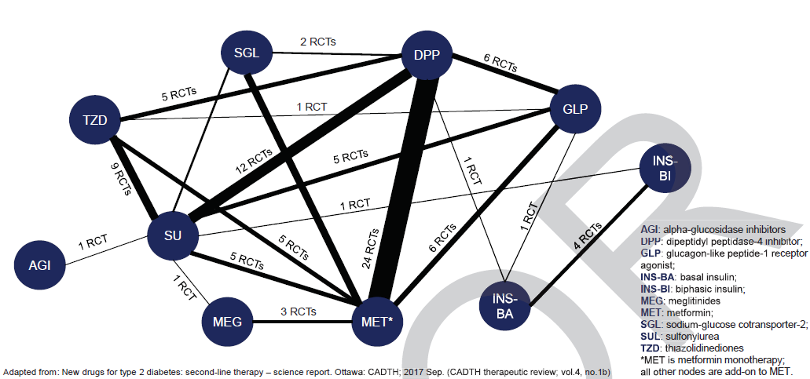
International Society for Pharmacoeconomics and Outcomes Research (ISPOR) 에서는 근거가 2개 이상인 치료를 연결하는 2개 이상의 임상연구(randomized clinical trial)가 있는 경우에 네트워크 메타분석이라는 용어를 사용한다. 이때 네트워크가 열려 있어 loop를 구성하지 못하면 간접비교(indirect treatment comparison, ITC)를 제안하고, 네트워크가 닫혀 있어서 loop를 구성하면 혼합비교(mixed treatment comparison, MTC)를 제안하였다. (Jansen et al., 2011)
7.1.1 네트워크 메타분석의 통계적 접근
네트워크 메타분석을 실행하는 방법은 크게 베이지안(Bayesian) 방법과 빈도주의적(frequentist) 방법으로 나누어볼 수 있다. 두 통계법의 차이는 통계모형에 접근하는 근본적인 개념의 차이에서 기인하며 표본크기가 클 경우 동일한 결과를 나타낸다.
우선 기존 네트워크 메타분석에서 상대적으로 많이 시행되는 ‘베이지안 방법’은 사전에 알려진 정보(prior probasbility 또는 external information)를 바탕으로 현재의 자료에서 주어진 정보(present data)를 더하여 연구가설이 참(true)일 사후확률(posterior probability)을 산출하는 것이다. 따라서 베이지안 방법은 사전정보에 따라 연구가설이 참일 확률이 변할 수 있는 확률적인 접근이라고 할 수 있다.
반면에 빈도주의적 방법은 일반적인 통계이론에 근거하여 현재 주어진 자료가 무한히 반복되었을 때 연구가설이 기각되거나 받아들여질 유의확률이나 신뢰구간에 기반한다. 따라서 빈도주의적 방법은 외적 정보와 무관하며, 주어진 자료 내에서 연구가설이 참일 확률이 이미 특정되어 있어서 단지 이것이 받아들여지거나 기각될지를 유의수준으로 판단한다.
| 베이지안 방법 | 빈도주의적 방법 | |
|---|---|---|
| 기본개념(basic concept) | 베이지안 이론(Bayesian therorem) | 자료의 분포(distribution) |
| 사용되는 정보(information used) | 사전확률(prior probability) & 연구자료(present data) | 연구자료(present data only) |
| 불확실성 측정(uncertainty measurment) | 신용구간(credible interval, Crl) | 신뢰구간(confidence interval, CI) |
| 연구가설 검정(hypothesis testing) | 연구가설이 참일 확률, 즉 사후확률을 직접 계산함 | |
| 귀무가설을 기각함으로써 연구 가설을 증명 |
다수의 선행연구를 참조하고 다양한 약물의 효과크기를 통해서 실제 현상을 설명하기에는 베이지안 방법이 빈도주의적 방법보다 논리적이고 타당하다고 볼 수 있다. 그러나 베이지안 방법은 연구가설에서 사전확률이 확립되어 있지 않을 경우, 사전확률을 설정하는 문제가 본래 분석하고자 하는 연구가설 검정보다 오히려 더 복잡할 수 있다. 그렇기 때문에 일반 연구자들이 접근하기에는 많은 한계를 지닌다. 최근, 다수의 연구에서 빈도주의적 방법과 베이지안 방법을 적용하여 네트워크 메타분석을 실행한 결과가 다르지 않음을 보여준다.
7.1.2 네트워크 메타분석의 기본 원리
7.1.2.1 간접비교
일반적인 메타분석(pairwise meta-analysis)에서는 두 치료그룹 간의 직접비교(direct comparison)에 따른 효과크기(effect size)를 여러 연구에서 종합하여 계산하였다. 그러나 둘 이상의 치료그룹에서 특정 치료간의 직접비교가 없을 경우에는 간접비교를 사용하여 이를 계산할 수 있다. 특히 공통 비교인자 (common comparator)를 통한 간접비교를 보정된 간접비교(adjusted indirect treatment comparison, AITC)라고 하는데, 이는 네트워크 메타분석을 가능하게 해주는 기본적인 원리이다.
예를 들어, 치료(treatment)는 3개(A, B, C)이고 2개의 연구(AB, AC)가 있으며 각각의 효과크기는 d_AB와 d_AC이다. A를 공통비교인자로 설정하여 2개의 직접비교 효과크기를 활용하여 BC의 간접비교(AITC)를 계산한 효과크기와 분산은 다음과 같다.
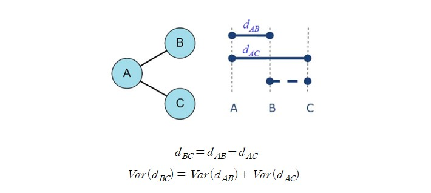
7.1.2.2 혼합비교
아래 그림과 같이 3개 치료 그룹 간의 직접비교 연구가 있는 경우에는 닫힌 loop를 형성하고 있기 때문에 직접비교와 간접비교(AITC)를 종합한 혼합비교(mixed treatment comparison, MTC)를 계산할 수 있다. 혼합비교는 Lumley(2002)가 2-arm trials에서 활용 가능한 방법을 제시하였고 이를 바탕으로 Higgins et al., (2012)와 White et al., (2012) 등이 multi-arm trials로 발전시켰다. 혼합비교는 연구의 정밀성(precision)을 향상시킬 수 있으며 직접비교만을 활용한 연구보다 신뢰구간(confidence interval)을 더 좁게 나타낼 수 있다.
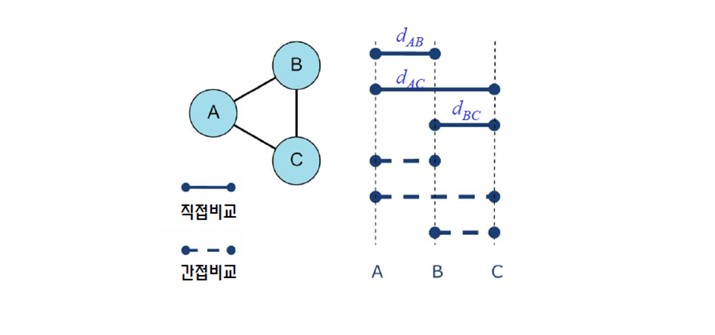
7.1.3 네트워크 메타분석의 가정
메타분석은 기본적으로 여러 연구들을 수리적으로 종합하는 통계적 방법론이기 때문에 사전에 여러 가정(assumption)들을 충족해야만 종합효과크기(overall effect size)의 타당성을 보여줄 수 있다. 더욱이 2개 이상의 치료를 연결하는 네트워크 메타분석의 경우에는 보다 엄격한 가정이 요구된다.
네트워크 메타분석의 가정은 크게 임상석 유사성(clinical similarity), 통계적 동질성(statistical non-heterogeneity), 논리적 이행성(transitivity), 그리고 효과크기들의 일관성(consistency)으로 구분할 수 있다. 특히 주요 논문들에서는 임상적 의미가 있는 연구들을 수집하였는지 확인하는 임상적 유사성과 통계적 검정이 가능한 일관성을 중점적으로 다루고 있다.
메타분석은 태생적으로 이질성 논쟁을 피할 수 없다. 따라서 동일 연구디자인 내에서라면 임상적 유사성 검정을 위하여 Cochrane 통계량이나 Higgins 등의 이질성 수치를 활용할 수 있다. 그러나 이것은 비단 네트워크 메타분석에서뿐만 아니라 일반적인 메타분석에서와 동일한 논쟁이므로 크게 차별점이 없다. 더욱이 네트워크 메타분석에서는 여러 치료법과 여러 연구디자인을 아울러야 하므로 결국 이행성을 검정하기 위한 일관성 가정이 초점이 되고 있다. 다시말하면, ‘일관성’이란 직접비교와 간접비교를 수렴하기 위한 특수한 경우의 이질성(special type of heterogeneity)이라고 할 수 있다. 따라서 이를 검정함으로써 네트워크 메타분석 결과의 유의함을 보여주고자 하는 것이다.
7.1.3.1 유사성(similarity)
대상 연구들 간의 임상적, 방법론적 유사성을 나타내는 것이다. 일반적으로 PICO (population, Intervention, Comparison, Outcomes)를 통하여 대상연구 선정의 전체적인 흐름을 파악하게 되는데 대상연구들이 연구주제와 부합하며 전반적으로 임상적, 방법론적으로 유사하여야 한다. 예를 들면, 대상연구들 중에서 인구집단(population) 내 동일한 질환군을 대상으로 실시한 연구가 아니라면 유사성을 의심하여야 한다. 그러나 임상적 유사성은 연구의 전반적인 유사성이지 통계적으로 검정할 수 있는 것은 아니다.
7.1.3.2 이행성(transitivity)
임상적, 방법론적 유사성이 치료그룹과 연구들 간에 있어서 논리적으로 확장된 개념이라고 할 수 있다. 간단히 설명하자면 만약 세 가지 치료(A, B, C)를 비교한 연구의 효과크기가 \(A>B\) 그리고 \(B>C\) 라면 \(A>C\)가 논리적으로 타당한 것이다. 이러한 논리적 이행성은 네트워크 메타분석 내 모든 경우에서 지켜져야 한다.
앞서 살펴본 유사성과 이행성은 개념적으로 비슷하지만 상호 동일한 것은 아니다. 예를 들어 3개의 연구가 고혈압 환자 중에서 각각 AB는 severe군, AC는 moderate군, 그리고 BC는 mild군을 대상으로 실시되어졌다고 가정해보자. 모든 연구가 고혈압이라는 특정 인구집단이기에 임상적 유사성은 만족할지라도 논리적 이행성 가정은 성립되지 않는다. 왜냐하면 이미 개별연구 인구집단별로 효과크기의 차별이 존재하기 때문이다.
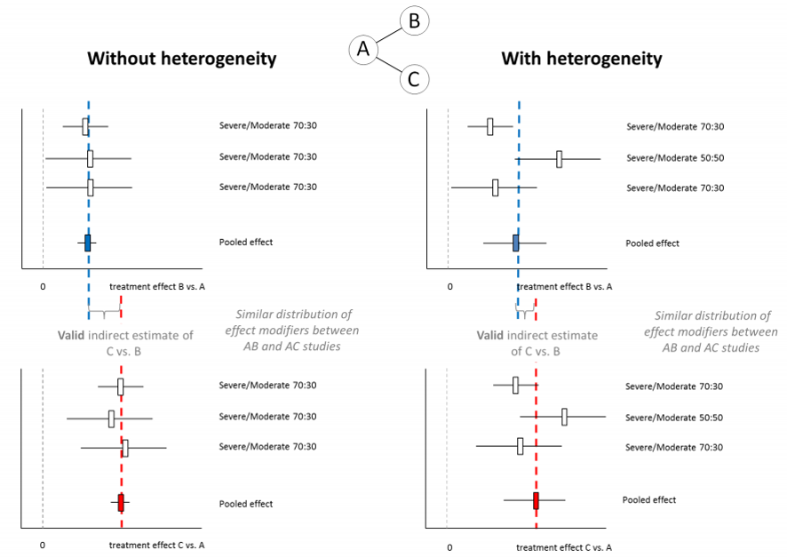

7.1.3.3 일관성(consistency)
기본적으로 일관성은 혼합비교를 구현함에 있어서 직접비교와 간접비교를 통한 효과크기가 동일하다는 가정이다. 예를 들어 관심효과크기가 BC라면 우선 직접비교를 통한 효과크기 \(d_{BC}\)와 간접비교를 통한 효과크기 \(d_{BC}\)는 통계적으로 유의한 차이를 보이지 않아야 일관성 가정이 충족된다고 볼 수 있다. 또한 일관성 검정은 논리적 이행성 가정을 검정하는 통계적인 방법이라고도 할 수 있다.
Higgins는 multi-arm 네트워크 메타분석에 적용 가능한 비일관성(inconsistency, 즉 일관성을 보이지 않는 여러 경우) 모델에 대한 개념을 다음과 같이 두 가지로 폭넓게 정립하였다. 첫째, 혼합비교를 계산할 때 직접비교와 간접비교의 차이를(difference) 들 수 있는데, 이를 loof inconsistency라고 한다. 둘째 동일하게 관심 효과크기가 BC라면 연구디자인 (BC, ABC)에 따른 (difference)를 들 수 있는데, BC 디자인에서의 직접비교 값인 \(d_{BC}\)와 ABC 디자인에서의 직접비교 값인 \(d_{BC}\)의 차이를 design inconsistency라고 한다.
7.2 PRISMA 네트워크 메타분석 체크리스트
일반적인 메타분석(pairwise meta-analysis)을 확장한 개념인 PRISMA (preferred Reporting Items for Systematic Reviews and Meta-analyses) 네트워크 메타분석 체크리스트는 (Hutton et al., 2015) 기존 메타분석에 더하여 네트워크 메타분석에 추가적으로 요구되는 항목들을 잘 기술하고 있다. 1번 title에서부터 연구에 대한 이해관계를 규정한 27번 funding 항목까지 매우 상세히 설명하고 있어 네트워크 메타분석 연구를 실시하고자 하는 연구자들은 반드시 이를 참조하여야 한다. 본 연구에서는 이들 항목 중 특히 네트워크 메타분석에서 반드시 보고되어야 하는 항목들은 다음과 같다.
7.2.1 네트워크 지형도
네트워크 지형도(network geometry)는 네트워크 메타분석에서 비교군 간의 관계를 도식화한 것이다. 네트워크 지형도의 질적 기술(qualitative description)은 일반적으로 네트워크 그래프(map or plot)로, 양적관계(quantitative metrics)는 각 치료별 가중값을 보여주는 기여도 그림(contribution plot)으로 보여주는 것이 일반적이다.
7.2.2 일관성 검정(assessment of consistency)
네트워크 메타분석의 기본 가정인 일관성을 검정하는 방법으로 두 가지 방법이 있다. 첫 번째 개별 치료별 접근(local approach)은 Bucher가 제시한 방법을 활용하여 각 치료별로 짝지어서(node-splitting) 직접비교와 간접비교의 차이를 통계적으로 검정하는 것이다. 두 번째 전체 모델별 접근(global approach)은 design by treatment interaction model을 사용하여 각각의 연구디자인별 비일관성 모델의 회귀계수를 계산한 후 Wald test로 전체 모델에 대한 회귀계수들의 선형성을 검정하는 것이다.
7.2.3 치료법 간의 비교우위 선정
네트워크 메타분석의 유용한 장점 중의 하나는 각 치료별 누적확률(cumulative probability)을 활용하여 치료법 간의 비교 우선순위를 산출할 수 있다는 것이다. 일반적으로 SUCRA(surface under the cumulative ranking) 곡선으로 나타내어지며, 각 치료별로 best에서부터 worst까지 확률을 도식화하여 곡선 아래 면적이 넓을수록 우선순위가 높다고 판단할 수 있다.
7.3 이산형 자료 예제
7.3.1 자료의 입력
bin_nma <- read.table(text='
study d n trt
"Alshryda 2013" 10 80 D
"Alshryda 2013" 26 81 A
"Barrachina 2016" 4 36 C
"Barrachina 2016" 14 37 A
"Benoni 2000" 9 20 C
"Benoni 2000" 15 19 A
"Benoni 2001" 4 18 B
"Benoni 2001" 8 20 A
"Claeys 2007" 1 20 B
"Claeys 2007" 6 20 A
"Fraval 2017" 1 50 C
"Fraval 2017" 6 51 A
"Husted 2003" 2 20 C
"Husted 2003" 7 20 A
"Hsu 2015" 2 30 C
"Hsu 2015" 9 30 A
"Johansson 2005" 8 47 B
"Johansson 2005" 23 53 A
"Kazemi 2010" 7 32 B
"Kazemi 2010" 15 32 A
"Lee 2013" 9 34 C
"Lee 2013" 20 34 A
"Lemay 2004" 6 20 C
"Lemay 2004" 13 19 A
"Martin 2014" 3 25 D
"Martin 2014" 5 25 A
"Niskanen 2005" 5 19 C
"Niskanen 2005" 8 20 A
"North 2016" 8 70 C
"North 2016" 12 69 D
"Rajesparan 2009" 3 36 B
"Rajesparan 2009" 10 37 A
"Wang 2016" 9 81 B
"Wang 2016" 10 38 A
"Wei 2014" 6 101 B
"Wei 2014" 26 100 A
"Xie 2016" 3 70 B
"Xie 2016" 4 70 D
"Xie 2016" 0 70 E
"Yi 2016" 8 50 B
"Yi 2016" 1 50 E
"Yi 2016" 19 50 A
"Yue 2014" 3 52 D
"Yue 2014" 11 49 A
', header=T)
bin_nma## study d n trt
## 1 Alshryda 2013 10 80 D
## 2 Alshryda 2013 26 81 A
## 3 Barrachina 2016 4 36 C
## 4 Barrachina 2016 14 37 A
## 5 Benoni 2000 9 20 C
## 6 Benoni 2000 15 19 A
## 7 Benoni 2001 4 18 B
## 8 Benoni 2001 8 20 A
## 9 Claeys 2007 1 20 B
## 10 Claeys 2007 6 20 A
## 11 Fraval 2017 1 50 C
## 12 Fraval 2017 6 51 A
## 13 Husted 2003 2 20 C
## 14 Husted 2003 7 20 A
## 15 Hsu 2015 2 30 C
## 16 Hsu 2015 9 30 A
## 17 Johansson 2005 8 47 B
## 18 Johansson 2005 23 53 A
## 19 Kazemi 2010 7 32 B
## 20 Kazemi 2010 15 32 A
## 21 Lee 2013 9 34 C
## 22 Lee 2013 20 34 A
## 23 Lemay 2004 6 20 C
## 24 Lemay 2004 13 19 A
## 25 Martin 2014 3 25 D
## 26 Martin 2014 5 25 A
## 27 Niskanen 2005 5 19 C
## 28 Niskanen 2005 8 20 A
## 29 North 2016 8 70 C
## 30 North 2016 12 69 D
## 31 Rajesparan 2009 3 36 B
## 32 Rajesparan 2009 10 37 A
## 33 Wang 2016 9 81 B
## 34 Wang 2016 10 38 A
## 35 Wei 2014 6 101 B
## 36 Wei 2014 26 100 A
## 37 Xie 2016 3 70 B
## 38 Xie 2016 4 70 D
## 39 Xie 2016 0 70 E
## 40 Yi 2016 8 50 B
## 41 Yi 2016 1 50 E
## 42 Yi 2016 19 50 A
## 43 Yue 2014 3 52 D
## 44 Yue 2014 11 49 A베이지안 네트워크 메타분석을 실행하기 위해 gemtc 패키지를 이용한다. 또한 MCMC를 위해 JAGS를 이용하므로 JAGS(http://mcmc-jags.sourceforge.net/) 프로그램을 별도로 설치해야 한다.
#install.packages("gemtc")
library(gemtc)## Loading required package: codagemtc package는 여러 함수를 포함하고 있으며, 그 중 네트워크 분석을 실행하는 mtc.network 함수는 함수의 인수가 특정 변수명이어야 실행 가능하다. 이산형 자료에서는 순서대로 이벤트 수를 나타내는 “responders”와 표본크기인 “sampleSize” 변수명이 일치해야 한다. 따라서 이를 위해 column 명을 변경한다.
colnames(bin_nma) <- c("study", "responders", "sampleSize", "treatment")
colnames(bin_nma)## [1] "study" "responders" "sampleSize" "treatment"다음으로 네트워크 plot에서 treatment를 상세히 보여주고 이를 네트워크 셋업으로 활용하기 위해 treatment 데이터셋을 설정한다.
treatment <- read.table(text='
id description
A "Placebo"
B "IV(single)"
C "IV(double)"
D "Topical"
E "Combination"
', header=T) 7.3.2 네트워크 plot
데이터셋 bin_nma와 treatment를 이용하여 네트워크 셋업을 시행한다. 이때 함수는 mtc.network를 이용한다.
network <- mtc.network(data.ab=bin_nma, treatments=treatment, description="Bayesian NMA")셋업된 네트워크 정보를 network에 저장하고 plot 함수를 이용해 간단하게 네트워크 plot을 출력한다.
plot(network, use.description=T)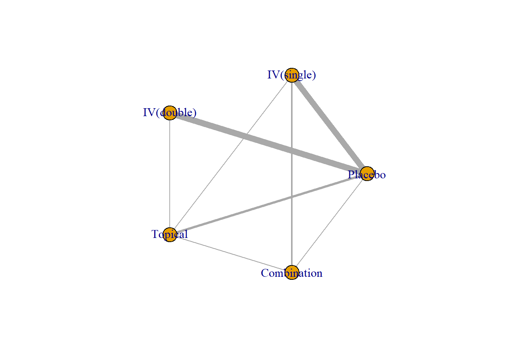
네트워크 plot은 네트워크를 구성하는 치료그룹 간의 직접비교(direct comparison) 관계를 도식화해서 보여준다. 각 node를 연결하는 엣지(edge)의 굵기는 수행된 연구 수를 의미한다. 네트워크 plot은 네트워크 메타분석 연구에서 치료 간의 질적, 양적 관계를 가늠할 수 있게 해주므로 반드시 제시되어야 한다.
library(igraph)##
## Attaching package: 'igraph'## The following objects are masked from 'package:stats':
##
## decompose, spectrum## The following object is masked from 'package:base':
##
## unionplot(network, layout=igraph::layout.fruchterman.reingold, use.description=T)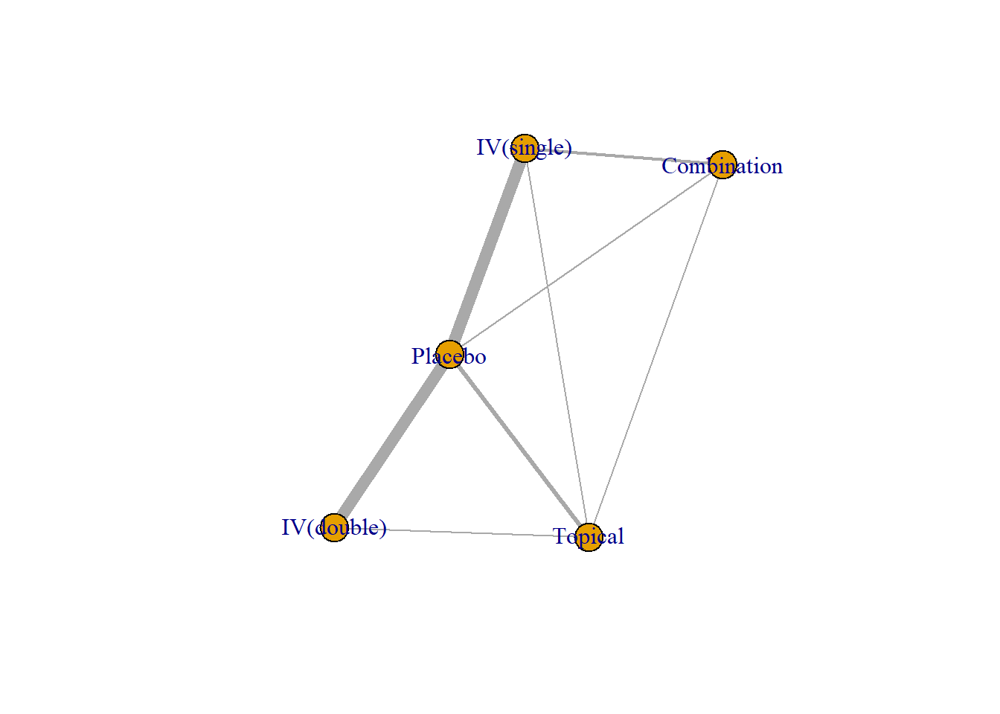
위의 예제와 같이 igraph 패키지를 이용하면 네트워크 plot을 좀 더 다양하게 표현하는 것이 가능하다.
summary(network)## $Description
## [1] "MTC dataset: Bayesian NMA"
##
## $`Studies per treatment`
## A B C D E
## 19 9 9 5 2
##
## $`Number of n-arm studies`
## 2-arm 3-arm
## 19 2
##
## $`Studies per treatment comparison`
## t1 t2 nr
## 1 A B 8
## 2 A C 8
## 3 A D 3
## 4 A E 1
## 5 B D 1
## 6 B E 2
## 7 C D 1
## 8 D E 1summary 명령어를 실시하면 결과창에서 네트워크 셋업의 전반적인 상황을 볼 수 있다. 각 치료별 2-arm 또는 3-arm 연구의 개수와 치료별 대응개수도 알 수 있다. 즉, 네트워크 plot을 수치적으로 나타낸 결과이다.
7.3.3 네트워크 모델
네트워크 셋업 후 고정효과모형(fixed effect model) 또는 랜덤효과모형(random effect model)으로 네트워크 모델을 설정한다. 이때 함수 mtc.model을 이용한다.
model_fix <- mtc.model(network, linearModel='fixed', n.chain=4, likelihood='binom', link='logit') # Fixed effect model## Warning in readChar(fileName, file.info(fileName)[["size"]]): UTF-8가 아닌 MBCS
## 로케일에서만 바이트로만 읽을 수 있습니다
## Warning in readChar(fileName, file.info(fileName)[["size"]]): UTF-8가 아닌 MBCS
## 로케일에서만 바이트로만 읽을 수 있습니다
## Warning in readChar(fileName, file.info(fileName)[["size"]]): UTF-8가 아닌 MBCS
## 로케일에서만 바이트로만 읽을 수 있습니다mtc.model 함수에 네트워크 셋업 데이터 network를 불러들여 고정효과모형 또는 랜덤효과모형으로 설정하여 각각 model_fix와 model_ran으로 저장한다. 여기서 n.chain은 MCMC에서 사용할 chain 수를 나타낸다.
model_ran <- mtc.model(network, linearModel='random', n.chain=4, likelihood='binom', link='logit') # Random effect model## Warning in readChar(fileName, file.info(fileName)[["size"]]): UTF-8가 아닌 MBCS
## 로케일에서만 바이트로만 읽을 수 있습니다
## Warning in readChar(fileName, file.info(fileName)[["size"]]): UTF-8가 아닌 MBCS
## 로케일에서만 바이트로만 읽을 수 있습니다
## Warning in readChar(fileName, file.info(fileName)[["size"]]): UTF-8가 아닌 MBCS
## 로케일에서만 바이트로만 읽을 수 있습니다motc.model에서 효과크기 설정은 likelihood와 link 옵션으로 조절하며, 효과크기 종류와 매칭시켜야 하는 변수명은 다음과 같다.
- Odds ratio: binom/logit, (responders, sampleSize)
- Risk ratio: binom/log (responders, sampleSize)
- Hazard ratio: binom/cloglog, (responders, sampleSize)
- Hazard ratio: poisson/log, (responders, exposure)
7.3.4 MCMC 시물레이션과 진단
7.3.4.1 MCMC 시뮬레이션 실행
네트워크 모델이 설정되면 MCMC 시뮬레이션을 실시한다. 전반적인 순서는 적정 수준의 시뮬레이션 횟수를 설정하여 실행하고 실행한 결과들의 수렴 여부를 확인한다. 먼저 고정효과모형을 중심으로 살펴보자. MCMC 시물레이션은 mtc.run 함수를 사용한다.
###### MCMC Simulation
mcmc_fix <- mtc.run(model_fix, n.adapt=1000, n.iter=10000, thin=10)## Compiling model graph
## Resolving undeclared variables
## Allocating nodes
## Graph information:
## Observed stochastic nodes: 44
## Unobserved stochastic nodes: 25
## Total graph size: 860
##
## Initializing model여기서 n.adapt=1000은 MCMC를 통해 추출된 난수중 초기값에 영향을 받는 처음부터 1000번까지는 버리는다는 의미이다. n.iter=10000은 n.adapt에서 제거한 난수 이후에 생성되는 난수의 수를 의미하며 thin은 10번의 간격으로 생성난 난수를 추출한다는 의미이다. 따라서 총 난수는 1번부터 11000번까지 생성되며, 그중에서 1~1000번까지의 난수는 버리게 되며, 1001번부터 11000까지의 난수 중 1010, 1020, … 과 같은 순으로 난수가 추출된다.
베이지안 분석에서는 사후분포(posterior distribution)를 결정하기 위해 다중연쇄(multi chain)를 고려한 사전분포(prior distribution)을 넣어주는데, 이때 사전분포를 계산하기 위한 사전분포의 사전모수, 즉 초모수(hyperparameter)의 초기값을 다중으로 설정하여 다중연쇄 시뮬레이션을 실시한다. 총 10000개의 난수 중 10번 간격으로 추출하는 것이기 때문에 각 chain별로 1000개씩의 난수를 추출하게 된다. MCMC 수행 결과는 summary 함수를 통해 살펴볼 수 있다.
summary(mcmc_fix)##
## Results on the Log Odds Ratio scale
##
## Iterations = 1010:11000
## Thinning interval = 10
## Number of chains = 4
## Sample size per chain = 1000
##
## 1. Empirical mean and standard deviation for each variable,
## plus standard error of the mean:
##
## Mean SD Naive SE Time-series SE
## d.A.B -1.337 0.1974 0.003121 0.003113
## d.A.C -1.520 0.2289 0.003618 0.003443
## d.A.D -1.133 0.2606 0.004120 0.004153
## d.A.E -4.320 1.2931 0.020445 0.019152
##
## 2. Quantiles for each variable:
##
## 2.5% 25% 50% 75% 97.5%
## d.A.B -1.728 -1.469 -1.337 -1.2065 -0.9506
## d.A.C -1.977 -1.669 -1.516 -1.3681 -1.0793
## d.A.D -1.653 -1.305 -1.131 -0.9533 -0.6287
## d.A.E -7.356 -5.033 -4.104 -3.4006 -2.3811
##
## -- Model fit (residual deviance):
##
## Dbar pD DIC
## 31.00530 25.44744 56.45273
##
## 44 data points, ratio 0.7047, I^2 = 0%7.3.4.2 MCMC 시뮬레이션 진단
MCMC 시뮬레이션이 잘 수행되었는지 확인하기 위해서 아래 사항들을 복합적으로 확인한다.
MCMC error : 몬테카를로 오차(Naive SE & Time-series SE)는 작을수록 높은 정밀도를 나타내어 수렴이 잘 되었다고 판단할 수 있다. 시뮬레이션의 전반적인 평가는 MCMC error 가 얼마나 최소화되는가에 달려 있다고 볼 수 있다. 따라서 반복 시뮬레이션 획수를 늘려 표본의 수를 충분히 확보하고 초기값의 영향을 제거하기 위해 burn-in 과정을 거치며 난수 추출간격 thin을 잘 조정해야 한다.
DIC (deviance information criterion) : \(DIC = \bar{D} + pD\)로 표현된다 \(\bar{D}\)는 잔차이탈도(residual deviance)의 합이며 \(pD\)는 모수 수의 추정값으로 결국 DIC는 모형의 적합도와 복잡성을 동시에 고려한 수치이다. 이 수치가 작을수록 좀 더 나은 모형이라고 할 수 있다.
trace plot과 density plot : trace plot은 특정한 패턴 없이 각 chain들이 얽혀 있어야 잘 수렴했다고 판단할 수 있다. density plot은 사후분포(사후밀도함수)로서 시뮬레이션 반복횟수에 따라 모양이 크게 다르다면 잘 수렴하지 않았다는 것을 의미한다.
plot(mcmc_fix)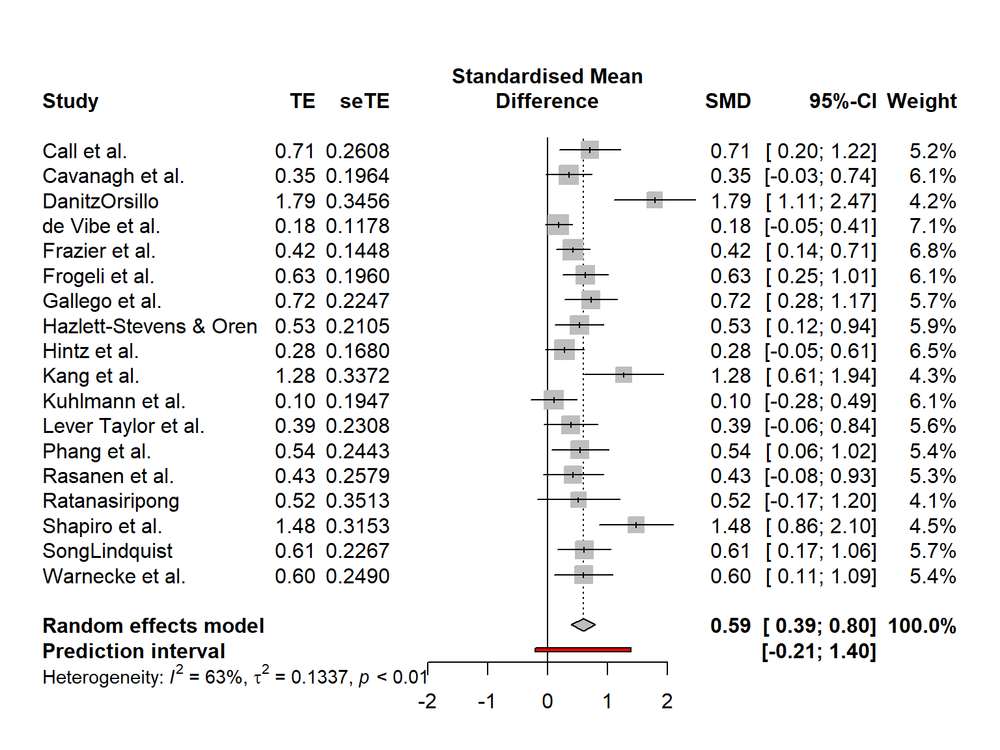
- 겔만-루빈(Gelman-Rubin) 통계량과 plot
###### Gelman-Rubin Statistics and plot
gelman.diag(mcmc_fix)## Potential scale reduction factors:
##
## Point est. Upper C.I.
## d.A.B 1 1
## d.A.C 1 1
## d.A.D 1 1
## d.A.E 1 1
##
## Multivariate psrf
##
## 1 gelman.plot(mcmc_fix)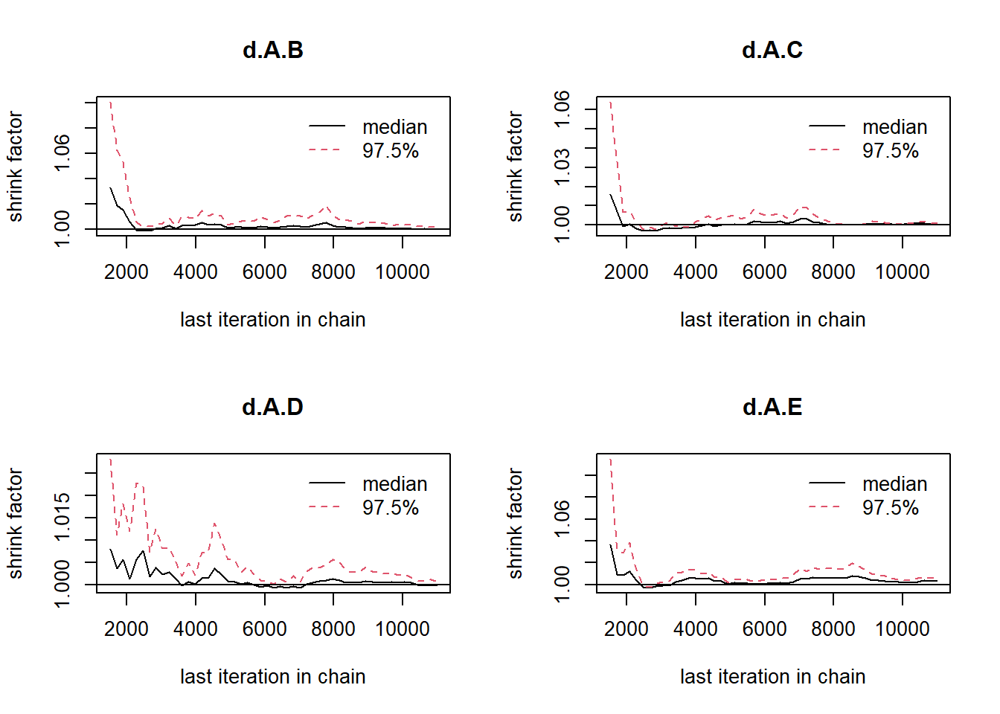
gelman.diag 함수는 겔만-루빈 통계량을 구해주며, gelman.plot은 겔만-루빈 plot을 그려준다. 시뮬레이션 반복횟수가 커짐에 따라 1에 가깝게 나타나며 변동이 안정화되어야 잘 수렵했다고 할 수 있다.
7.3.5 일관성 검정(consistency test)
네트워크 메타분석의 가정에서 일관성 검정은 네트워크 메타분석 결과의 적용 가능 여부를 판가름하는 매우 중요한 도구이다.
###### Consistency test
node_fix <- mtc.nodesplit(network, linearModel='fixed', n.adapt=1000, n.iter=10000, thin=10)## Warning in readChar(fileName, file.info(fileName)[["size"]]): UTF-8가 아닌 MBCS
## 로케일에서만 바이트로만 읽을 수 있습니다
## Warning in readChar(fileName, file.info(fileName)[["size"]]): UTF-8가 아닌 MBCS
## 로케일에서만 바이트로만 읽을 수 있습니다
## Warning in readChar(fileName, file.info(fileName)[["size"]]): UTF-8가 아닌 MBCS
## 로케일에서만 바이트로만 읽을 수 있습니다## Compiling model graph
## Resolving undeclared variables
## Allocating nodes
## Graph information:
## Observed stochastic nodes: 43
## Unobserved stochastic nodes: 26
## Total graph size: 937
##
## Initializing model## Warning in readChar(fileName, file.info(fileName)[["size"]]): UTF-8가 아닌 MBCS
## 로케일에서만 바이트로만 읽을 수 있습니다
## Warning in readChar(fileName, file.info(fileName)[["size"]]): UTF-8가 아닌 MBCS
## 로케일에서만 바이트로만 읽을 수 있습니다
## Warning in readChar(fileName, file.info(fileName)[["size"]]): UTF-8가 아닌 MBCS
## 로케일에서만 바이트로만 읽을 수 있습니다## Compiling model graph
## Resolving undeclared variables
## Allocating nodes
## Graph information:
## Observed stochastic nodes: 44
## Unobserved stochastic nodes: 26
## Total graph size: 952
##
## Initializing model## Warning in readChar(fileName, file.info(fileName)[["size"]]): UTF-8가 아닌 MBCS
## 로케일에서만 바이트로만 읽을 수 있습니다
## Warning in readChar(fileName, file.info(fileName)[["size"]]): UTF-8가 아닌 MBCS
## 로케일에서만 바이트로만 읽을 수 있습니다
## Warning in readChar(fileName, file.info(fileName)[["size"]]): UTF-8가 아닌 MBCS
## 로케일에서만 바이트로만 읽을 수 있습니다## Compiling model graph
## Resolving undeclared variables
## Allocating nodes
## Graph information:
## Observed stochastic nodes: 44
## Unobserved stochastic nodes: 26
## Total graph size: 949
##
## Initializing model## Warning in readChar(fileName, file.info(fileName)[["size"]]): UTF-8가 아닌 MBCS
## 로케일에서만 바이트로만 읽을 수 있습니다
## Warning in readChar(fileName, file.info(fileName)[["size"]]): UTF-8가 아닌 MBCS
## 로케일에서만 바이트로만 읽을 수 있습니다
## Warning in readChar(fileName, file.info(fileName)[["size"]]): UTF-8가 아닌 MBCS
## 로케일에서만 바이트로만 읽을 수 있습니다## Compiling model graph
## Resolving undeclared variables
## Allocating nodes
## Graph information:
## Observed stochastic nodes: 43
## Unobserved stochastic nodes: 26
## Total graph size: 935
##
## Initializing model## Warning in readChar(fileName, file.info(fileName)[["size"]]): UTF-8가 아닌 MBCS
## 로케일에서만 바이트로만 읽을 수 있습니다
## Warning in readChar(fileName, file.info(fileName)[["size"]]): UTF-8가 아닌 MBCS
## 로케일에서만 바이트로만 읽을 수 있습니다
## Warning in readChar(fileName, file.info(fileName)[["size"]]): UTF-8가 아닌 MBCS
## 로케일에서만 바이트로만 읽을 수 있습니다## Compiling model graph
## Resolving undeclared variables
## Allocating nodes
## Graph information:
## Observed stochastic nodes: 43
## Unobserved stochastic nodes: 26
## Total graph size: 931
##
## Initializing model## Warning in readChar(fileName, file.info(fileName)[["size"]]): UTF-8가 아닌 MBCS
## 로케일에서만 바이트로만 읽을 수 있습니다
## Warning in readChar(fileName, file.info(fileName)[["size"]]): UTF-8가 아닌 MBCS
## 로케일에서만 바이트로만 읽을 수 있습니다
## Warning in readChar(fileName, file.info(fileName)[["size"]]): UTF-8가 아닌 MBCS
## 로케일에서만 바이트로만 읽을 수 있습니다## Compiling model graph
## Resolving undeclared variables
## Allocating nodes
## Graph information:
## Observed stochastic nodes: 44
## Unobserved stochastic nodes: 26
## Total graph size: 948
##
## Initializing model## Warning in readChar(fileName, file.info(fileName)[["size"]]): UTF-8가 아닌 MBCS
## 로케일에서만 바이트로만 읽을 수 있습니다
## Warning in readChar(fileName, file.info(fileName)[["size"]]): UTF-8가 아닌 MBCS
## 로케일에서만 바이트로만 읽을 수 있습니다
## Warning in readChar(fileName, file.info(fileName)[["size"]]): UTF-8가 아닌 MBCS
## 로케일에서만 바이트로만 읽을 수 있습니다## Compiling model graph
## Resolving undeclared variables
## Allocating nodes
## Graph information:
## Observed stochastic nodes: 43
## Unobserved stochastic nodes: 26
## Total graph size: 931
##
## Initializing model## Warning in readChar(fileName, file.info(fileName)[["size"]]): UTF-8가 아닌 MBCS
## 로케일에서만 바이트로만 읽을 수 있습니다
## Warning in readChar(fileName, file.info(fileName)[["size"]]): UTF-8가 아닌 MBCS
## 로케일에서만 바이트로만 읽을 수 있습니다
## Warning in readChar(fileName, file.info(fileName)[["size"]]): UTF-8가 아닌 MBCS
## 로케일에서만 바이트로만 읽을 수 있습니다## Compiling model graph
## Resolving undeclared variables
## Allocating nodes
## Graph information:
## Observed stochastic nodes: 44
## Unobserved stochastic nodes: 25
## Total graph size: 860
##
## Initializing model# plot(node_fix)
plot(summary(node_fix))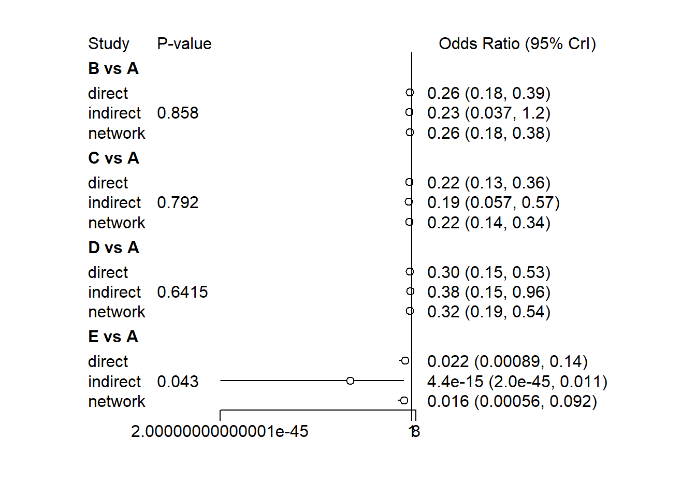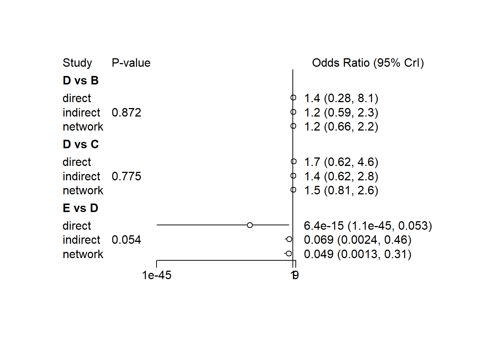
mtc.nodesplit 함수에 네트워크 셋입 자료를 넣어서 일관성 검정을 위한 고정효과모형 모델 node_fix를 만든다. 이때 MCMC 시뮬레이션도 같이 시행된다. 치료 간의 변동을 시각적으로 쉽게 파악할 수 있으며 모든 개별 치료 간의 일관성 검정 결과를 쉽게 파악할 수 있다. 전체적으로 통계적 유의차를 보이지 않아 해당 모델은 일관성을 지지하는 것으로 나타난다.
7.3.6 Forest plot
네트워크 메타분석을 통해 치료그룹별 효과크기를 한눈에 알아볼 수 있도록 도식화하여 비교한다.
###### Forest plot
forest(relative.effect(mcmc_fix,t1="A"), digits=3)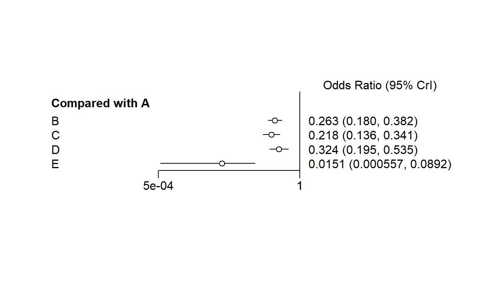
relative.effect 함수를 통해 치료 그룹간 효과크기를 추출하고 이를 forest 함수를 통해 forest plot을 그린다. relative.effect 함수의 인수중 t1에 “A”를 넣으면 참조치료를 A로 하는 forest plot을 생성한다.
###### Forest plot
forest(relative.effect(mcmc_fix,t1="E"), digits=3)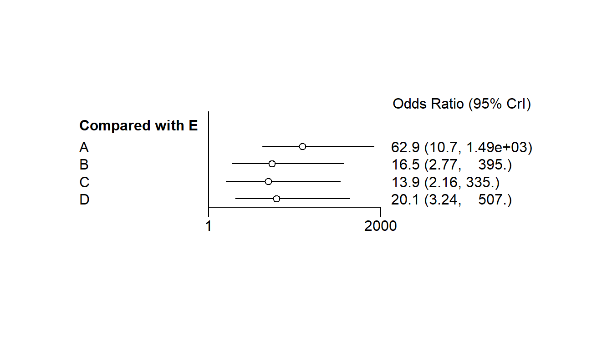
Forest plot을 통해 각 치료별 효과크기를 직관적으로 비교할 수 있다. Placebo에 대비한 모든 치료별 효과크기(OR, 수혈률)가 낮게 나타났으며 \(95\%\) 신용구간(credible interval)이 겹치지 않는다는 것을 알 수 있다. 특히 병용치료방법(E, combination)의 경우 placebo뿐만 아니라 정맥1회주사법(B, IV(single)), 정맥2회주사법(C, IV(double)), 국소도포법(D, topical) 등 모든 치료에 대비하여 통계적으로 유의하게 수혈률이 낮음을 알 수 있다. 참조치료를 E로 변경하면 반대로 해석할 수 있다.
7.3.7 치료 간 비교우위 선정(treatment ranking)
네트워크 메타분석의 가장 중요한 기능 중의 하나는 치료 간 비교우위를 선정할 수 있다는 것이다. 다시 말해 치료별 최우선 순위에서 최하위 순위까지 선택될 누적확률을 계산할 수 있다.
rank.probability 함수에 MCMC 최종 모형을 넣고, preferredDirection은 효과크기가 작을수록 우수한 것인지 클수록 우수한 것인지에 따라 ‘-1’ 또는 ‘1’ 중에서 방향을 설정한다. 예제에서는 참조치료 대비 효과크기가 작을수록 우수한 것이기 때문에 ’-1’을 설정한다.
###### Treatment ranking
rank_fix <- rank.probability(mcmc_fix, preferredDirection=-1)
rank_fix## Rank probability; preferred direction = -1
## [,1] [,2] [,3] [,4] [,5]
## A 0.00000 0.00000 0.00000 0.00000 1
## B 0.00025 0.25325 0.50725 0.23925 0
## C 0.00100 0.68525 0.25825 0.05550 0
## D 0.00000 0.06025 0.23450 0.70525 0
## E 0.99875 0.00125 0.00000 0.00000 0결과를 살펴보면 E(combination)이 best 치료일 경우는 99.8%이다. 2순위로 선택될 치료로는 C(IV double)가 68.2%이며, 다음으로는 B(IV single), D(topical), A(placebo)의 순위를 보인다.
치료간 우위를 그래프로 표현하면 다음과 같다.
plot(rank_fix, beside=T)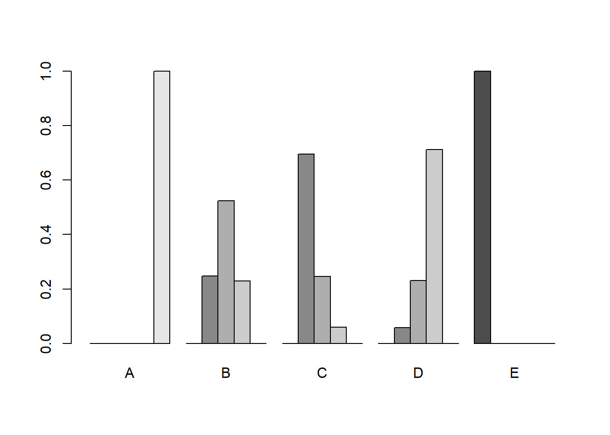
7.4 연속형 자료 예제
7.4.1 자료의 입력
con_nma <- read.table(text='
study n m s trt
"Alshryda 2013" 80 1650 188 D
"Alshryda 2013" 81 1981 1007 A
"Barrachina 2016" 36 1308 641 C
"Barrachina 2016" 37 2215 1136 A
"Benoni 2000" 20 550 275 C
"Benoni 2000" 19 500 234 A
"Benoni 2001" 18 759 193 B
"Benoni 2001" 20 996 267 A
"Ekbck 2000" 20 1130 400 C
"Ekbck 2000" 20 1770 523 A
"Fraval 2017" 50 1084 440 C
"Fraval 2017" 51 1394 426 A
"Garneti 2004" 25 1443 809 B
"Garneti 2004" 25 1340 665 A
"Johansson 2005" 47 969 434 B
"Johansson 2005" 53 1324 577 A
"Lemay 2004" 20 1308 462 C
"Lemay 2004" 19 1469 405 A
"Lee 2013" 34 647 216 C
"Lee 2013" 34 1326 349 A
"Niskanen 2005" 19 626 206 C
"Niskanen 2005" 20 790 293 A
"North 2016" 70 1195 485.9 C
"North 2016" 69 1442.7 562.7 D
"Rajesparan 2009" 36 1372 436 B
"Rajesparan 2009" 37 1683 705 A
"Wei 2014" 101 958.5 422.1 B
"Wei 2014" 102 963.4 421.3 D
"Wei 2014" 100 1364.2 278.6 A
"Yi 2016" 50 1002.6 366.9 B
"Yi 2016" 50 750.6 343.5 E
"Yi 2016" 50 1221.1 386.3 A
"Xie 2016" 70 878 210 B
"Xie 2016" 70 905.07 237.7 D
"Xie 2016" 70 670.7 189 E
"Yamasaki 2004" 20 1350 477 B
"Yamasaki 2004" 20 1667 401 A
"Yue 2014" 52 1050.3 331.7 D
"Yue 2014" 49 1255.5 193.5 A
', header=T)
con_nma## study n m s trt
## 1 Alshryda 2013 80 1650.00 188.0 D
## 2 Alshryda 2013 81 1981.00 1007.0 A
## 3 Barrachina 2016 36 1308.00 641.0 C
## 4 Barrachina 2016 37 2215.00 1136.0 A
## 5 Benoni 2000 20 550.00 275.0 C
## 6 Benoni 2000 19 500.00 234.0 A
## 7 Benoni 2001 18 759.00 193.0 B
## 8 Benoni 2001 20 996.00 267.0 A
## 9 Ekbck 2000 20 1130.00 400.0 C
## 10 Ekbck 2000 20 1770.00 523.0 A
## 11 Fraval 2017 50 1084.00 440.0 C
## 12 Fraval 2017 51 1394.00 426.0 A
## 13 Garneti 2004 25 1443.00 809.0 B
## 14 Garneti 2004 25 1340.00 665.0 A
## 15 Johansson 2005 47 969.00 434.0 B
## 16 Johansson 2005 53 1324.00 577.0 A
## 17 Lemay 2004 20 1308.00 462.0 C
## 18 Lemay 2004 19 1469.00 405.0 A
## 19 Lee 2013 34 647.00 216.0 C
## 20 Lee 2013 34 1326.00 349.0 A
## 21 Niskanen 2005 19 626.00 206.0 C
## 22 Niskanen 2005 20 790.00 293.0 A
## 23 North 2016 70 1195.00 485.9 C
## 24 North 2016 69 1442.70 562.7 D
## 25 Rajesparan 2009 36 1372.00 436.0 B
## 26 Rajesparan 2009 37 1683.00 705.0 A
## 27 Wei 2014 101 958.50 422.1 B
## 28 Wei 2014 102 963.40 421.3 D
## 29 Wei 2014 100 1364.20 278.6 A
## 30 Yi 2016 50 1002.60 366.9 B
## 31 Yi 2016 50 750.60 343.5 E
## 32 Yi 2016 50 1221.10 386.3 A
## 33 Xie 2016 70 878.00 210.0 B
## 34 Xie 2016 70 905.07 237.7 D
## 35 Xie 2016 70 670.70 189.0 E
## 36 Yamasaki 2004 20 1350.00 477.0 B
## 37 Yamasaki 2004 20 1667.00 401.0 A
## 38 Yue 2014 52 1050.30 331.7 D
## 39 Yue 2014 49 1255.50 193.5 A베이지안 네트워크 메타분석을 실행하기 위해 gemtc 패키지를 이용한다. 또한 MCMC를 위해 JAGS를 이용하므로 JAGS(http://mcmc-jags.sourceforge.net/) 프로그램을 별도로 설치해야 한다.
#install.packages("gemtc")
library(gemtc)gemtc package는 여러 함수를 포함하고 있으며, 그 중 네트워크 분석을 실행하는 mtc.network 함수는 함수의 인수가 특정 변수명이어야 실행 가능하다. 연속형 자료에서는 순서대로 “sampleSize,” “mean,” “std.dev”가 일치해야 한다. 따라서 이를 위해 column 명을 변경한다.
colnames(con_nma) <- c("study", "sampleSize", "mean", "std.dev", "treatment")
colnames(con_nma)## [1] "study" "sampleSize" "mean" "std.dev" "treatment"다음으로 네트워크 plot에서 treatment를 상세히 보여주고 이를 네트워크 셋업으로 활용하기 위해 treatment 데이터셋을 설정한다.
treatment <- read.table(text='
id description
A "Treatment A"
B "Treatment B"
C "Treatment C"
D "Treatment D"
E "Treatment E"
', header=T) 7.4.2 네트워크 plot
데이터셋 con_nma와 treatment를 이용하여 네트워크 셋업을 시행한다. 이때 함수는 mtc.network를 이용한다.
network <- mtc.network(data.ab=con_nma, treatments=treatment, description="Bayesian NMA")셋업된 네트워크 정보를 network에 저장하고 plot 함수를 이용해 간단하게 네트워크 plot을 출력한다.
plot(network, use.description=T)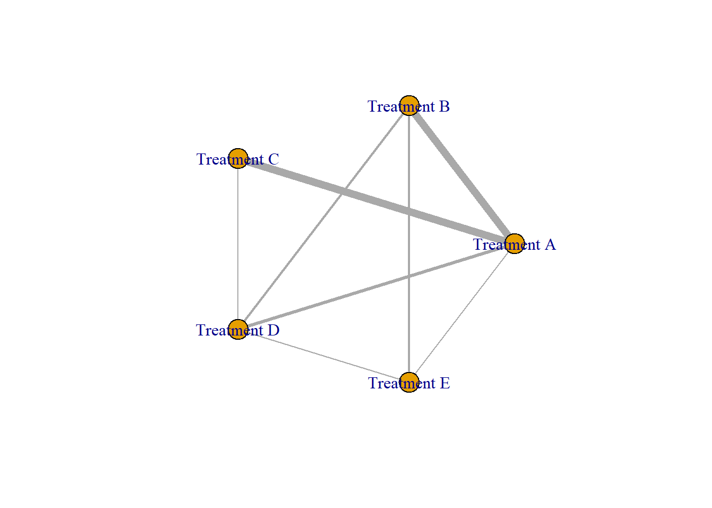
네트워크 plot은 네트워크를 구성하는 치료그룹 간의 직접비교(direct comparison) 관계를 도식화해서 보여준다. 각 node를 연결하는 엣지(edge)의 굵기는 수행된 연구 수를 의미한다. 네트워크 plot은 네트워크 메타분석 연구에서 치료 간의 질적, 양적 관계를 가늠할 수 있게 해주므로 반드시 제시되어야 한다.
summary(network)## $Description
## [1] "MTC dataset: Bayesian NMA"
##
## $`Studies per treatment`
## A B C D E
## 16 8 8 5 2
##
## $`Number of n-arm studies`
## 2-arm 3-arm
## 15 3
##
## $`Studies per treatment comparison`
## t1 t2 nr
## 1 A B 7
## 2 A C 7
## 3 A D 3
## 4 A E 1
## 5 B D 2
## 6 B E 2
## 7 C D 1
## 8 D E 1summary 명령어를 실시하면 결과창에서 네트워크 셋업의 전반적인 상황을 볼 수 있다. 각 치료별 2-arm 또는 3-arm 연구의 개수와 치료별 대응개수도 알 수 있다. 즉, 네트워크 plot을 수치적으로 나타낸 결과이다.
7.4.3 네트워크 모델
네트워크 셋업 후 고정효과모형 또는 랜덤효과모형으로 네트워크 모델을 설정한다. 이때 함수 mtc.model을 이용한다.
model_fix <- mtc.model(network, linearModel='fixed', n.chain=4, likelihood='normal', link='identity') # Fixed effect model## Warning in readChar(fileName, file.info(fileName)[["size"]]): UTF-8가 아닌 MBCS
## 로케일에서만 바이트로만 읽을 수 있습니다
## Warning in readChar(fileName, file.info(fileName)[["size"]]): UTF-8가 아닌 MBCS
## 로케일에서만 바이트로만 읽을 수 있습니다
## Warning in readChar(fileName, file.info(fileName)[["size"]]): UTF-8가 아닌 MBCS
## 로케일에서만 바이트로만 읽을 수 있습니다mtc.model 함수에 네트워크 셋업 데이터 network를 불러들여 고정효과모형 또는 랜덤효과모형으로 설정하여 각각 model_fix와 model_ran으로 저장한다. 여기서 n.chain은 MCMC에서 사용할 chain 수를 나타낸다.
model_ran <- mtc.model(network, linearModel='random', n.chain=4, likelihood='normal', link='identity') # Random effect model## Warning in readChar(fileName, file.info(fileName)[["size"]]): UTF-8가 아닌 MBCS
## 로케일에서만 바이트로만 읽을 수 있습니다
## Warning in readChar(fileName, file.info(fileName)[["size"]]): UTF-8가 아닌 MBCS
## 로케일에서만 바이트로만 읽을 수 있습니다
## Warning in readChar(fileName, file.info(fileName)[["size"]]): UTF-8가 아닌 MBCS
## 로케일에서만 바이트로만 읽을 수 있습니다7.4.4 MCMC 시물레이션과 진단
7.4.4.1 MCMC 시뮬레이션 실행
네트워크 모델이 설정되면 MCMC 시뮬레이션을 실시한다. 전반적인 순서는 적정 수준의 시뮬레이션 횟수를 설정하여 실행하고 실행한 결과들의 수렴 여부를 확인한다. 먼저 고정효과모형을 중심으로 살펴보자. MCMC 시물레이션은 mtc.run 함수를 사용한다.
###### MCMC Simulation
mcmc_fix <- mtc.run(model_fix, n.adapt=1000, n.iter=10000, thin=10)## Compiling model graph
## Resolving undeclared variables
## Allocating nodes
## Graph information:
## Observed stochastic nodes: 39
## Unobserved stochastic nodes: 22
## Total graph size: 454
##
## Initializing model여기서 n.adapt=1000은 MCMC를 통해 추출된 난수중 초기값에 영향을 받는 처음부터 1000번까지는 버리는다는 의미이다. n.iter=10000은 n.adapt에서 제거한 난수 이후에 생성되는 난수의 수를 의미하며 thin은 10번의 간격으로 생성난 난수를 추출한다는 의미이다. 따라서 총 난수는 1번부터 11000번까지 생성되며, 그중에서 1~1000번까지의 난수는 버리게 되며, 1001번부터 11000까지의 난수 중 1010, 1020, … 과 같은 순으로 난수가 추출된다. MCMC 수행 결과는 summary 함수를 통해 살펴볼 수 있다.
summary(mcmc_fix)##
## Results on the Mean Difference scale
##
## Iterations = 10:10000
## Thinning interval = 10
## Number of chains = 4
## Sample size per chain = 1000
##
## 1. Empirical mean and standard deviation for each variable,
## plus standard error of the mean:
##
## Mean SD Naive SE Time-series SE
## d.A.B -301.8 28.77 0.4549 0.4895
## d.A.C -360.9 34.61 0.5472 0.5452
## d.A.D -275.7 28.08 0.4440 0.4754
## d.A.E -510.3 34.51 0.5457 0.5755
##
## 2. Quantiles for each variable:
##
## 2.5% 25% 50% 75% 97.5%
## d.A.B -357.6 -321.2 -301.7 -282.6 -246.8
## d.A.C -426.7 -383.5 -360.9 -338.1 -294.2
## d.A.D -329.6 -294.5 -275.6 -257.3 -220.1
## d.A.E -579.0 -533.4 -511.2 -487.0 -443.5
##
## -- Model fit (residual deviance):
##
## Dbar pD DIC
## 105.6814 22.1654 127.8468
##
## 39 data points, ratio 2.71, I^2 = 64%7.4.4.2 MCMC 시뮬레이션 진단
- Trace plot
plot(mcmc_fix)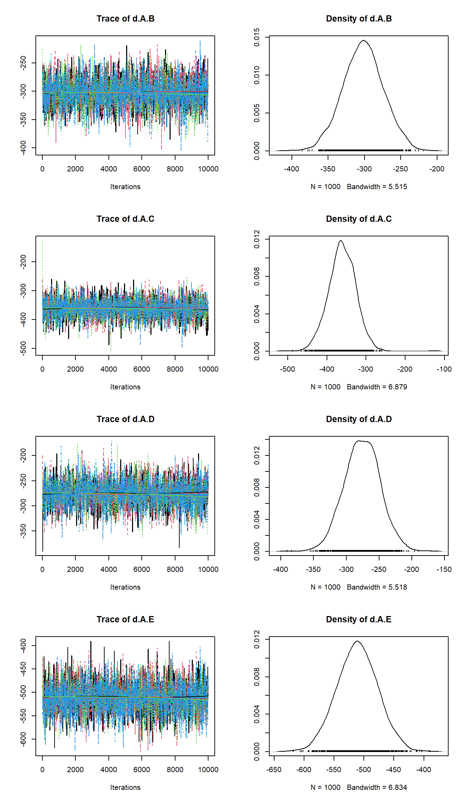
특정한 패턴 없이 각 chain들이 얽혀 있어야 잘 수렴했다고 판단할 수 있다. density plot은 사후분포(사후밀도함수)로서 시뮬레이션 반복횟수에 따라 모양이 크게 다르다면 잘 수렴하지 않았다는 것을 의미한다.
- 겔만-루빈(Gelman-Rubin) 통계량과 plot
###### Gelman-Rubin Statistics and plot
gelman.diag(mcmc_fix)## Potential scale reduction factors:
##
## Point est. Upper C.I.
## d.A.B 1.002 1.01
## d.A.C 1.000 1.00
## d.A.D 1.000 1.00
## d.A.E 0.999 1.00
##
## Multivariate psrf
##
## 1 gelman.plot(mcmc_fix)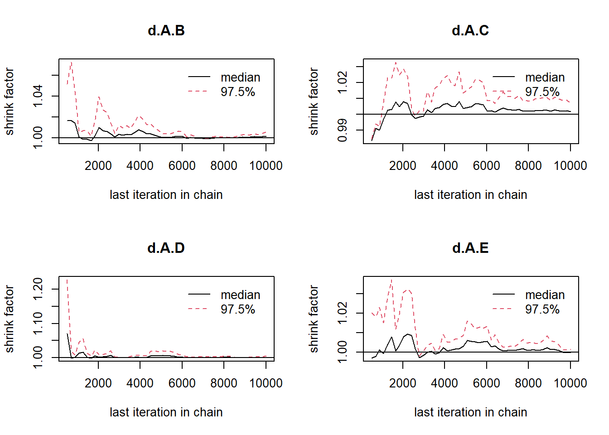
gelman.diag 함수는 겔만-루빈 통계량을 구해주며, gelman.plot은 겔만-루빈 plot을 그려준다. 시뮬레이션 반복횟수가 커짐에 따라 1에 가깝게 나타나며 변동이 안정화되어야 잘 수렵했다고 할 수 있다.
7.4.5 일관성 검정(consistency test)
네트워크 메타분석의 가정에서 일관성 검정은 네트워크 메타분석 결과의 적용 가능 여부를 판가름하는 매우 중요한 도구이다.
###### Consistency test
node_fix <- mtc.nodesplit(network, linearModel='fixed', n.adapt=1000, n.iter=10000, thin=10)## Warning in readChar(fileName, file.info(fileName)[["size"]]): UTF-8가 아닌 MBCS
## 로케일에서만 바이트로만 읽을 수 있습니다
## Warning in readChar(fileName, file.info(fileName)[["size"]]): UTF-8가 아닌 MBCS
## 로케일에서만 바이트로만 읽을 수 있습니다
## Warning in readChar(fileName, file.info(fileName)[["size"]]): UTF-8가 아닌 MBCS
## 로케일에서만 바이트로만 읽을 수 있습니다## Compiling model graph
## Resolving undeclared variables
## Allocating nodes
## Graph information:
## Observed stochastic nodes: 37
## Unobserved stochastic nodes: 23
## Total graph size: 527
##
## Initializing model## Warning in readChar(fileName, file.info(fileName)[["size"]]): UTF-8가 아닌 MBCS
## 로케일에서만 바이트로만 읽을 수 있습니다
## Warning in readChar(fileName, file.info(fileName)[["size"]]): UTF-8가 아닌 MBCS
## 로케일에서만 바이트로만 읽을 수 있습니다
## Warning in readChar(fileName, file.info(fileName)[["size"]]): UTF-8가 아닌 MBCS
## 로케일에서만 바이트로만 읽을 수 있습니다## Compiling model graph
## Resolving undeclared variables
## Allocating nodes
## Graph information:
## Observed stochastic nodes: 39
## Unobserved stochastic nodes: 23
## Total graph size: 545
##
## Initializing model## Warning in readChar(fileName, file.info(fileName)[["size"]]): UTF-8가 아닌 MBCS
## 로케일에서만 바이트로만 읽을 수 있습니다
## Warning in readChar(fileName, file.info(fileName)[["size"]]): UTF-8가 아닌 MBCS
## 로케일에서만 바이트로만 읽을 수 있습니다
## Warning in readChar(fileName, file.info(fileName)[["size"]]): UTF-8가 아닌 MBCS
## 로케일에서만 바이트로만 읽을 수 있습니다## Compiling model graph
## Resolving undeclared variables
## Allocating nodes
## Graph information:
## Observed stochastic nodes: 38
## Unobserved stochastic nodes: 23
## Total graph size: 533
##
## Initializing model## Warning in readChar(fileName, file.info(fileName)[["size"]]): UTF-8가 아닌 MBCS
## 로케일에서만 바이트로만 읽을 수 있습니다
## Warning in readChar(fileName, file.info(fileName)[["size"]]): UTF-8가 아닌 MBCS
## 로케일에서만 바이트로만 읽을 수 있습니다
## Warning in readChar(fileName, file.info(fileName)[["size"]]): UTF-8가 아닌 MBCS
## 로케일에서만 바이트로만 읽을 수 있습니다## Compiling model graph
## Resolving undeclared variables
## Allocating nodes
## Graph information:
## Observed stochastic nodes: 38
## Unobserved stochastic nodes: 23
## Total graph size: 536
##
## Initializing model## Warning in readChar(fileName, file.info(fileName)[["size"]]): UTF-8가 아닌 MBCS
## 로케일에서만 바이트로만 읽을 수 있습니다
## Warning in readChar(fileName, file.info(fileName)[["size"]]): UTF-8가 아닌 MBCS
## 로케일에서만 바이트로만 읽을 수 있습니다
## Warning in readChar(fileName, file.info(fileName)[["size"]]): UTF-8가 아닌 MBCS
## 로케일에서만 바이트로만 읽을 수 있습니다## Compiling model graph
## Resolving undeclared variables
## Allocating nodes
## Graph information:
## Observed stochastic nodes: 37
## Unobserved stochastic nodes: 23
## Total graph size: 523
##
## Initializing model## Warning in readChar(fileName, file.info(fileName)[["size"]]): UTF-8가 아닌 MBCS
## 로케일에서만 바이트로만 읽을 수 있습니다
## Warning in readChar(fileName, file.info(fileName)[["size"]]): UTF-8가 아닌 MBCS
## 로케일에서만 바이트로만 읽을 수 있습니다
## Warning in readChar(fileName, file.info(fileName)[["size"]]): UTF-8가 아닌 MBCS
## 로케일에서만 바이트로만 읽을 수 있습니다## Compiling model graph
## Resolving undeclared variables
## Allocating nodes
## Graph information:
## Observed stochastic nodes: 39
## Unobserved stochastic nodes: 23
## Total graph size: 541
##
## Initializing model## Warning in readChar(fileName, file.info(fileName)[["size"]]): UTF-8가 아닌 MBCS
## 로케일에서만 바이트로만 읽을 수 있습니다
## Warning in readChar(fileName, file.info(fileName)[["size"]]): UTF-8가 아닌 MBCS
## 로케일에서만 바이트로만 읽을 수 있습니다
## Warning in readChar(fileName, file.info(fileName)[["size"]]): UTF-8가 아닌 MBCS
## 로케일에서만 바이트로만 읽을 수 있습니다## Compiling model graph
## Resolving undeclared variables
## Allocating nodes
## Graph information:
## Observed stochastic nodes: 38
## Unobserved stochastic nodes: 23
## Total graph size: 532
##
## Initializing model## Warning in readChar(fileName, file.info(fileName)[["size"]]): UTF-8가 아닌 MBCS
## 로케일에서만 바이트로만 읽을 수 있습니다
## Warning in readChar(fileName, file.info(fileName)[["size"]]): UTF-8가 아닌 MBCS
## 로케일에서만 바이트로만 읽을 수 있습니다
## Warning in readChar(fileName, file.info(fileName)[["size"]]): UTF-8가 아닌 MBCS
## 로케일에서만 바이트로만 읽을 수 있습니다## Compiling model graph
## Resolving undeclared variables
## Allocating nodes
## Graph information:
## Observed stochastic nodes: 39
## Unobserved stochastic nodes: 22
## Total graph size: 454
##
## Initializing model# plot(node_fix)
plot(summary(node_fix))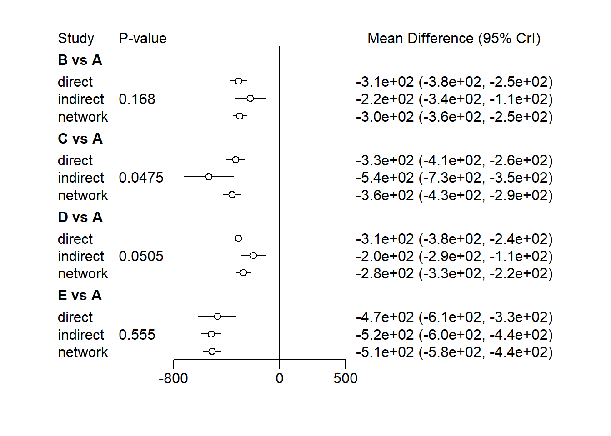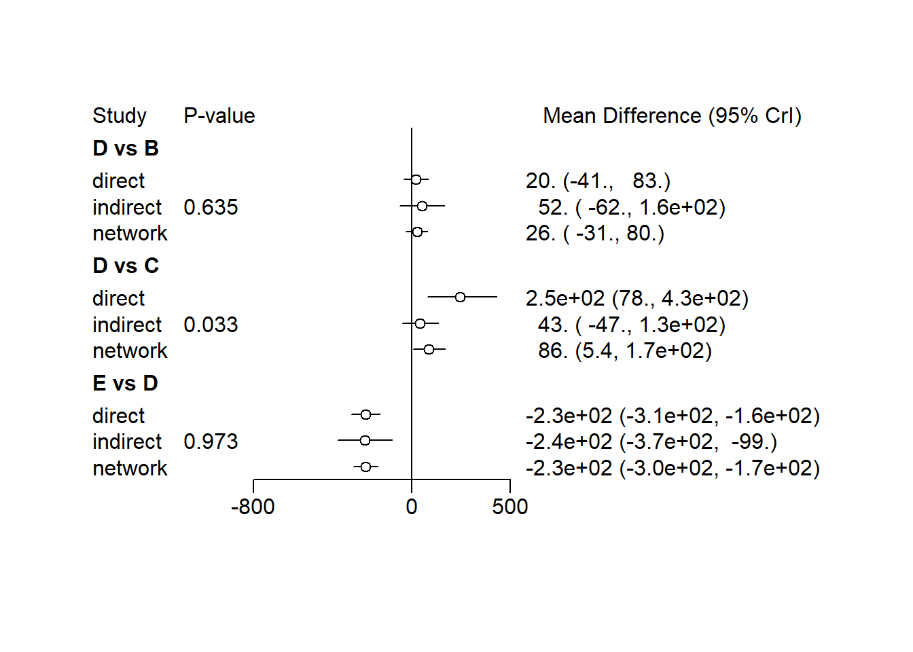
mtc.nodesplit 함수에 네트워크 셋입 자료를 넣어서 일관성 검정을 위한 고정효과모형 모델 node_fix를 만든다. 이때 MCMC 시뮬레이션도 같이 시행된다. 치료 간의 변동을 시각적으로 쉽게 파악할 수 있으며 모든 개별 치료 간의 일관성 검정 결과를 쉽게 파악할 수 있다. 전체적으로 통계적 유의차를 보이지 않아 해당 모델은 일관성을 지지하는 것으로 나타난다.
7.4.6 Forest plot
네트워크 메타분석을 통해 치료그룹별 효과크기를 한눈에 알아볼 수 있도록 도식화하여 비교한다.
###### Forest plot
forest(relative.effect(mcmc_fix,t1="A"), digits=3)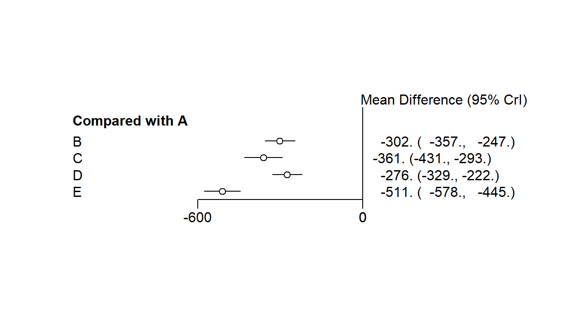
relative.effect 함수를 통해 치료 그룹간 효과크기를 추출하고 이를 forest 함수를 통해 forest plot을 그린다. relative.effect 함수의 인수중 t1에 “A”를 넣으면 참조치료를 A로 하는 forest plot을 생성한다.
7.4.7 치료 간 비교우위 선정(treatment randing)
네트워크 메타분석의 가장 중요한 기능 중의 하나는 치료 간 비교우위를 선정할 수 있다는 것이다. 다시 말해 치료별 최우선 순위에서 최하위 순위까지 선택될 누적확률을 계산할 수 있다.
rank.probability 함수에 MCMC 최종 모형을 넣고, preferredDirection은 효과크기가 작을수록 우수한 것인지 클수록 우수한 것인지에 따라 ‘-1’ 또는 ‘1’ 중에서 방향을 설정한다. 예제에서는 참조치료 대비 효과크기가 작을수록 우수한 것이기 때문에 ’-1’을 설정한다.
###### Treatment ranking
rank_fix <- rank.probability(mcmc_fix, preferredDirection=-1)
rank_fix## Rank probability; preferred direction = -1
## [,1] [,2] [,3] [,4] [,5]
## A 0.0000 0.00000 0.00000 0.00000 1
## B 0.0000 0.07925 0.74575 0.17500 0
## C 0.0005 0.91150 0.07075 0.01725 0
## D 0.0000 0.00875 0.18350 0.80775 0
## E 0.9995 0.00050 0.00000 0.00000 0결과를 살펴보면 Treatment E가 best 선택일 경우는 99.9%이다. 2순위로 선택될 치료로는 Treatment C이며, 다음으로는 Treatment B, D, A의 순위를 보인다.
치료간 우위를 그래프로 표현하면 다음과 같다.
plot(rank_fix, beside=T)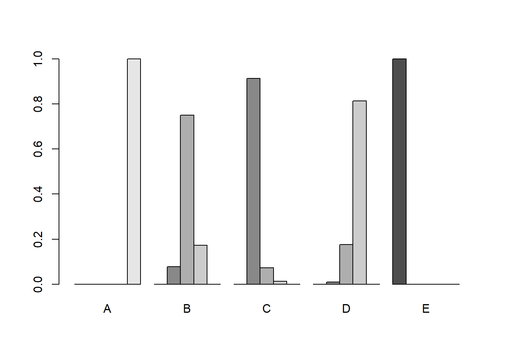
7.5 Time to event 예제
생존자료의 메타분석을 위해 여기서는 BUGSnet packages (https://bugsnetsoftware.github.io/)를 이용한다(meta package도 이용 가능).
7.5.1 자료의 입력
##### install.packages("BUGSnet")
library(BUGSnet)본 예제에서는 BUGSnet packages에 내장된 당뇨 관련 데이터인 diabetes.sim 데이터셋을 이용한다.
head(BUGSnet::diabetes.sim)## Study followup trtnum Treatment diabetes n age age_SD age_type
## 1 MRC-E 5.8 1 Diuretic 43 1081 60.7 14.26 mean & SD
## 2 MRC-E 5.8 2 Placebo 34 2213 59.2 13.10 mean & SD
## 3 MRC-E 5.8 3 blocker 37 1102 60.2 14.00 mean & SD
## 4 EWPH 4.7 1 Diuretic 29 416 59.0 15.20 mean & SD
## 5 EWPH 4.7 2 Placebo 20 424 57.0 14.80 mean & SD
## 6 SHEP 3.0 1 Diuretic 140 1631 63.1 13.20 mean & SD데이터를 BUGSnet에 적용하기 위해 data.prep 함수를 이용하여 변형한다.
rate2.slr <- BUGSnet::data.prep(arm.data=BUGSnet::diabetes.sim, varname.t="Treatment", varname.s="Study")7.5.2 네트워크 plot
데이터셋 con_nma와 treatment를 이용하여 네트워크 셋업을 시행한다. 이때 함수는 net.plot를 이용한다.
BUGSnet::net.plot(rate2.slr, node.scale=3, edge.scale=1.5)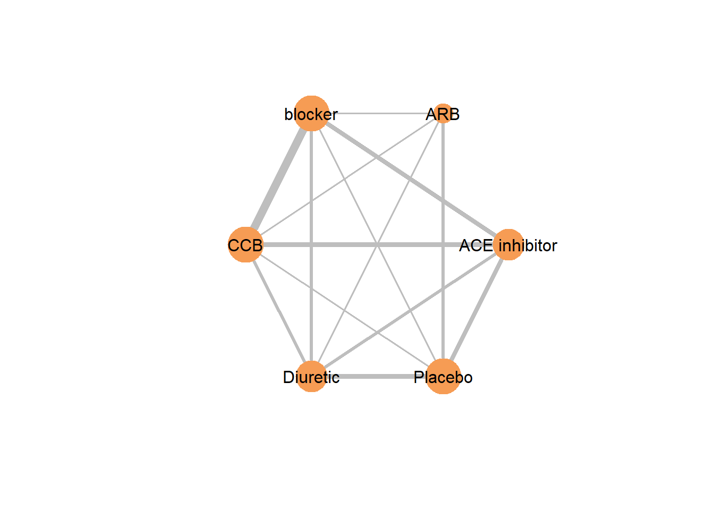
특정노드와 관련된 직접적인 근거(direct evidence)는 falg 옵션을 통해 조절한다.
BUGSnet::net.plot(rate2.slr, node.scale=3, edge.scale=1.5, flag="ARB")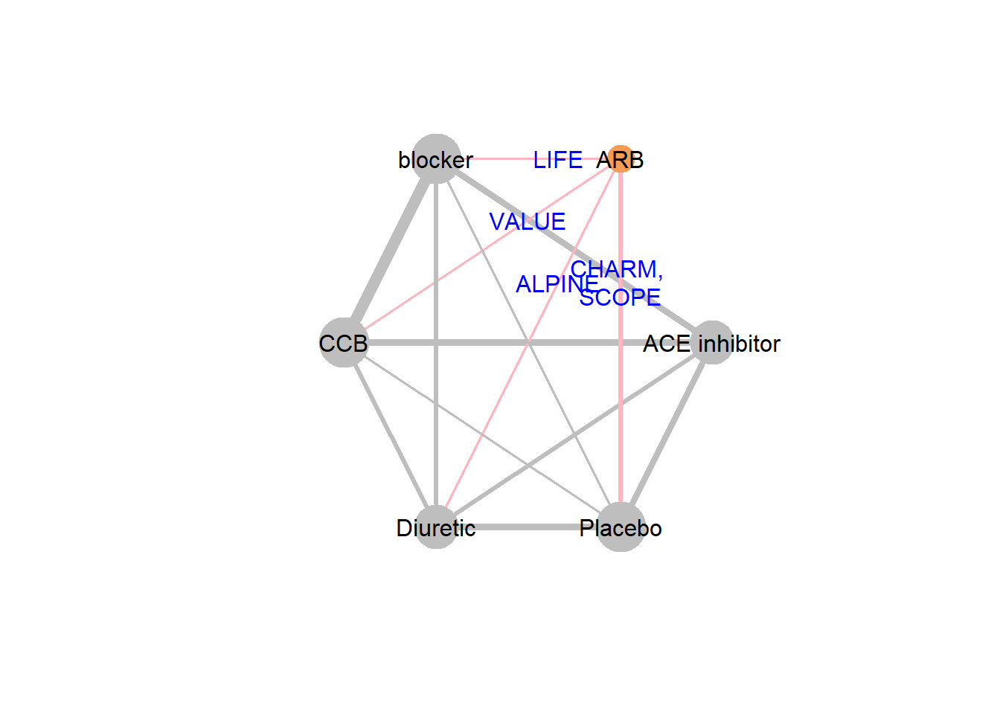
그림을 살펴보면, ARB와 관련된 5개의 연구에서 4개의 treatment와 연관되어 있음을 붉은 색 엣지로 표시해준다.
네트워크 특성과 관련된 정보는 다음과 같이 확인한다.
network.char <- BUGSnet::net.tab(data=rate2.slr, outcome="diabetes", N="n", type.outcome="rate2", time="followup")- Network Characteristics
network.char$network## # A tibble: 13 x 2
## Characteristic Value
## <chr> <chr>
## 1 Number of Interventions 6
## 2 Number of Studies 22
## 3 Total Number of Patients in Network 154176
## 4 Total Possible Pairwise Comparisons 15
## 5 Total Number of Pairwise Comparisons With Direct Data 14
## 6 Is the network connected? TRUE
## 7 Number of Two-arm Studies 18
## 8 Number of Multi-Arms Studies 4
## 9 Total Number of Events in Network 10962
## 10 Number of Studies With No Zero Events 22
## 11 Number of Studies With At Least One Zero Event 0
## 12 Number of Studies with All Zero Events 0
## 13 Mean person follow up time 4.06- Intervention Characterisitcs
network.char$intervention## Treatment n.studies n.events n.patients person.time.fup min.event.rate
## 1 ACE inhibitor 8 1618 23351 106027 0.007263184
## 2 ARB 5 1189 14185 57291 0.005102041
## 3 blocker 9 2705 36150 173098 0.005788848
## 4 CCB 9 2791 38809 163469 0.009421001
## 5 Diuretic 8 973 18699 71931 0.006032042
## 6 Placebo 9 1686 22982 89692 0.002648924
## max.event.rate events.per.person overall.event.rate
## 1 0.05705935 0.06929039 0.01526026
## 2 0.03229521 0.08382094 0.02075370
## 3 0.04548408 0.07482711 0.01562699
## 4 0.04168838 0.07191631 0.01707357
## 5 0.04081633 0.05203487 0.01352685
## 6 0.06160242 0.07336176 0.01879766- Comparison Characterisitcs
network.char$comparison## # A tibble: 14 x 7
## comparison n.studies n.patients n.outcomes patient_time proportion event.rate
## <chr> <int> <int> <int> <int> <dbl> <dbl>
## 1 ACE inhib~ 3 15158 1022 409266 0.0674 0.00250
## 2 ACE inhib~ 3 12597 538 289731 0.0427 0.00186
## 3 ACE inhib~ 2 16488 759 263808 0.0460 0.00288
## 4 ACE inhib~ 3 17893 1929 429432 0.108 0.00449
## 5 ARB vs. b~ 1 7999 562 71991 0.0703 0.00781
## 6 ARB vs. C~ 1 10161 1535 81288 0.151 0.0189
## 7 ARB vs. D~ 1 392 9 784 0.0230 0.0115
## 8 ARB vs. P~ 2 9778 573 127114 0.0586 0.00451
## 9 blocker v~ 5 44974 3361 1933882 0.0747 0.00174
## 10 blocker v~ 2 8752 241 166288 0.0275 0.00145
## 11 blocker v~ 1 3315 71 36465 0.0214 0.00195
## 12 CCB vs. D~ 2 15739 768 220346 0.0488 0.00349
## 13 CCB vs. P~ 1 9711 331 58266 0.0341 0.00568
## 14 Diuretic ~ 3 7343 384 198261 0.0523 0.00194- Patient Characteristics
BUGSnet::data.plot(data=rate2.slr, covariate="age", half.length="age_SD", by="treatment", avg.hline=T, text.size=12)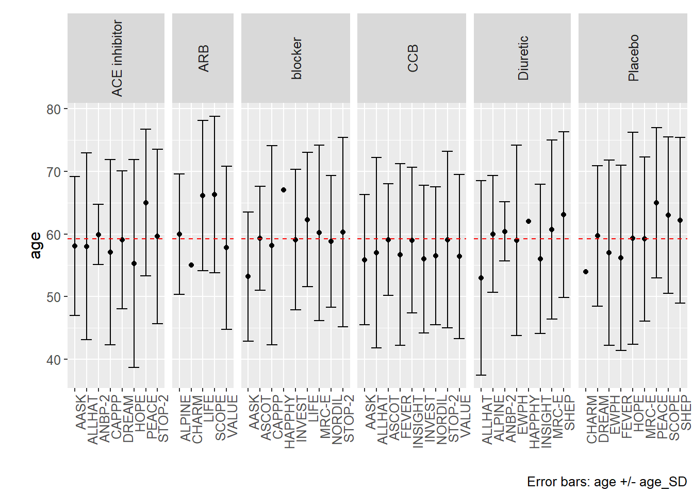
7.5.3 네트워크 모델
BUGSnet에서 고정효과모형 또는 랜덤효과모형 설정은 nma.model 함수를 이용한다.
- 고정효과모형
model_fix <- BUGSnet::nma.model(data=rate2.slr,
outcome="diabetes",
N="n",
reference="Diuretic",
family="binomial",
link="cloglog",
time="followup",
effects="fixed")- 랜덤효과모형
model_ran <- BUGSnet::nma.model(data=rate2.slr,
outcome="diabetes",
N="n",
reference="Diuretic",
family="binomial",
link="cloglog",
time="followup",
effects="random")7.5.4 MCMC 시물레이션과 진단
7.5.4.1 MCMC 시뮬레이션 실행
고정효과모형과 랜덤효과모형 실행은 nma.run 함수를 이용한다.
mcmc_fix <- BUGSnet::nma.run(model_fix,
n.burnin=1000,
n.iter=10000,
n.chains=4,
thin=10)## Compiling model graph
## Resolving undeclared variables
## Allocating nodes
## Graph information:
## Observed stochastic nodes: 48
## Unobserved stochastic nodes: 27
## Total graph size: 1075
##
## Initializing modelmcmc_ran <- BUGSnet::nma.run(model_ran,
n.burnin=1000,
n.iter=10000,
n.chains=4,
thin=10)## Compiling model graph
## Resolving undeclared variables
## Allocating nodes
## Graph information:
## Observed stochastic nodes: 48
## Unobserved stochastic nodes: 54
## Total graph size: 1161
##
## Initializing model7.5.4.2 MCMC 시뮬레이션 진단
고정효과모형과 랜덤효과모형은 rainbow plot과 DIC를 비교하여 선택한다. Leverage plot에서 보라색선을 넘어가는 연구는 잠재적 이상값(outlier)으로 간주할 수 있고 이들도 인해 모형이 잘 적합되지 않을 수 있음을 시사한다. 이를 위한 함수는 nma.fit이다.
par(mfrow=c(1,2))
model_fit_fix <- BUGSnet::nma.fit(mcmc_fix, main="Fixed Effects Model")
model_fit_ran <- BUGSnet::nma.fit(mcmc_ran, main="Random Effects Model")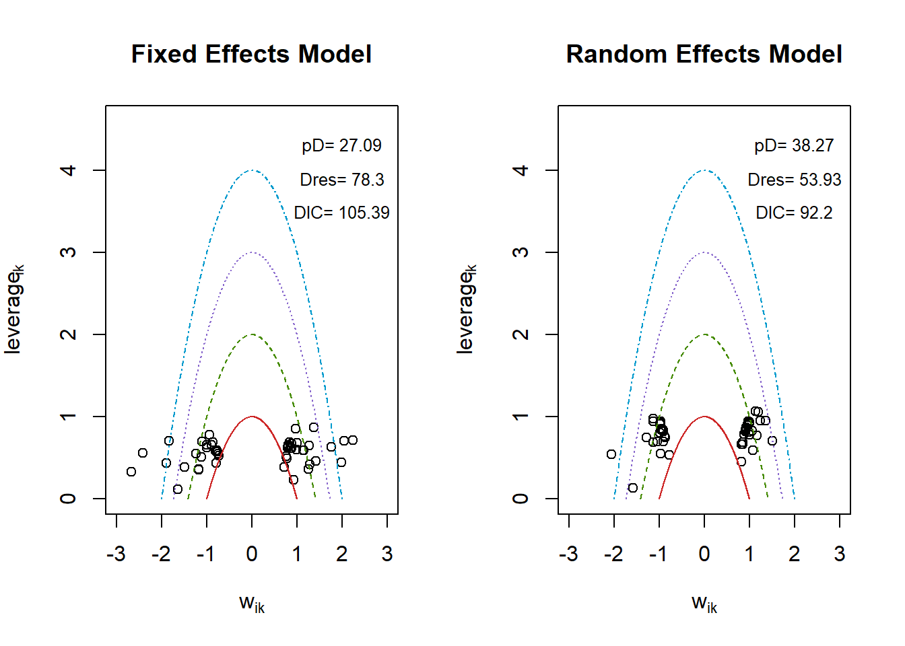
결과를 살펴보면 랜덤효과모형이 더 나은 것으로 나타난다. DIC가 91.56으로 고정효과모형의 105.2보다 낮게 나타나며, 고정효과모형에서 잠재적 이상값이 8개가 나타나 모형 적합에 영향을 주는것으로 보인다.
- Assessment of convergence
BUGSnet::nma.diag(mcmc_ran, plot_prompt=FALSE)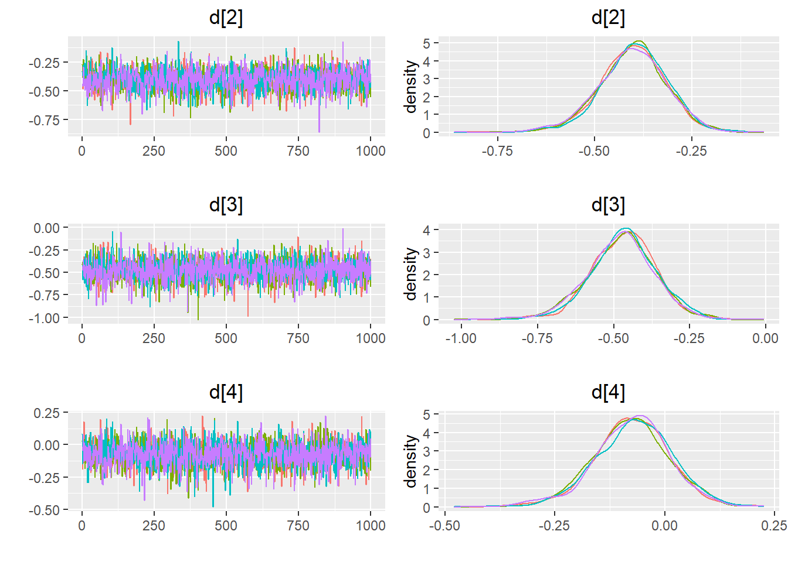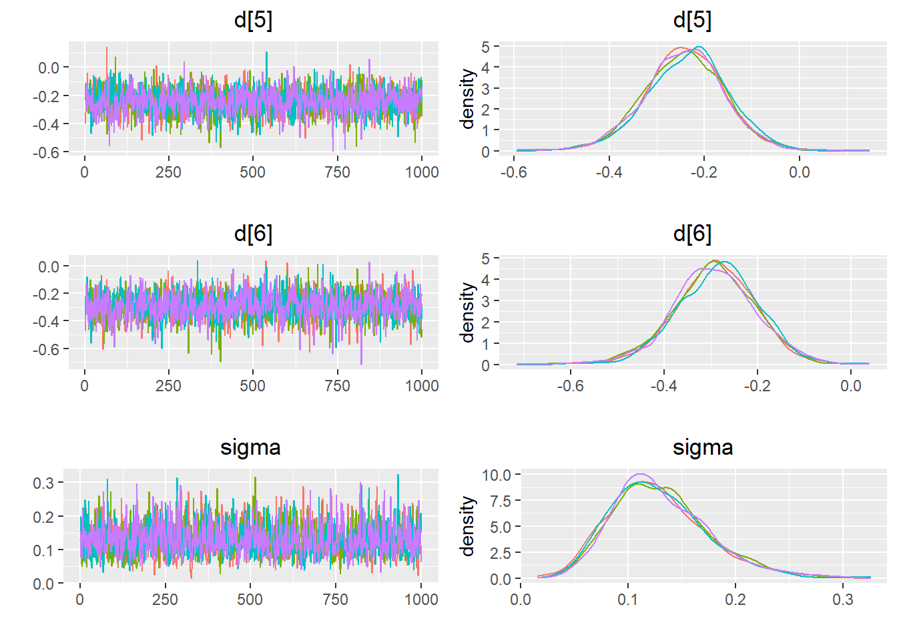
## $gelman.rubin
## $psrf
## Point est. Upper C.I.
## d[2] 1.002017 1.007378
## d[3] 1.003939 1.010822
## d[4] 1.003592 1.011015
## d[5] 1.003670 1.012225
## d[6] 1.003492 1.011500
## sigma 1.001655 1.005335
##
## $mpsrf
## [1] 1.004672
##
## attr(,"class")
## [1] "gelman.rubin.results"
##
## $geweke
## $stats
## Chain 1 Chain 2 Chain 3 Chain 4
## d[2] 0.06166281 -1.251844 -1.14155056 1.6811775
## d[3] 0.21597689 -2.167753 -0.17701427 1.7088981
## d[4] 0.08698725 -2.360175 0.47920770 3.1675841
## d[5] -0.15744333 -3.358428 0.06943686 1.2557715
## d[6] -0.55569578 -2.420346 -0.56750417 2.1243593
## sigma 1.15040142 1.244662 0.36439431 -0.4737361
##
## $frac1
## [1] 0.1
##
## $frac2
## [1] 0.5
##
## attr(,"class")
## [1] "geweke.results"7.5.5 일관성 검정(consistency test)
일관성 검정을 위해 랜덤효과모형과 비일관성모형의 rainbow plot과 DiC를 비교하여 일관성을 측정한다.
model_ran_inconsis <- BUGSnet::nma.model(data=rate2.slr,
outcome="diabetes",
N="n",
reference="Diuretic",
family="binomial",
link="cloglog",
time="followup",
type="inconsistency",
effects="random")mcmc_ran_inconsis <- BUGSnet::nma.run(model_ran_inconsis,
n.burnin=1000,
n.iter=10000,
n.chains=4,
thin=10)## Compiling model graph
## Resolving undeclared variables
## Allocating nodes
## Graph information:
## Observed stochastic nodes: 48
## Unobserved stochastic nodes: 64
## Total graph size: 1069
##
## Initializing modelpar(mfrow=c(1,2))
model_fit_ran <- BUGSnet::nma.fit(mcmc_ran, main="Consistency Random Effects Model")
model_fit_ran_inconsis <- BUGSnet::nma.fit(mcmc_ran_inconsis, main="Inconsistency Random Effects Model")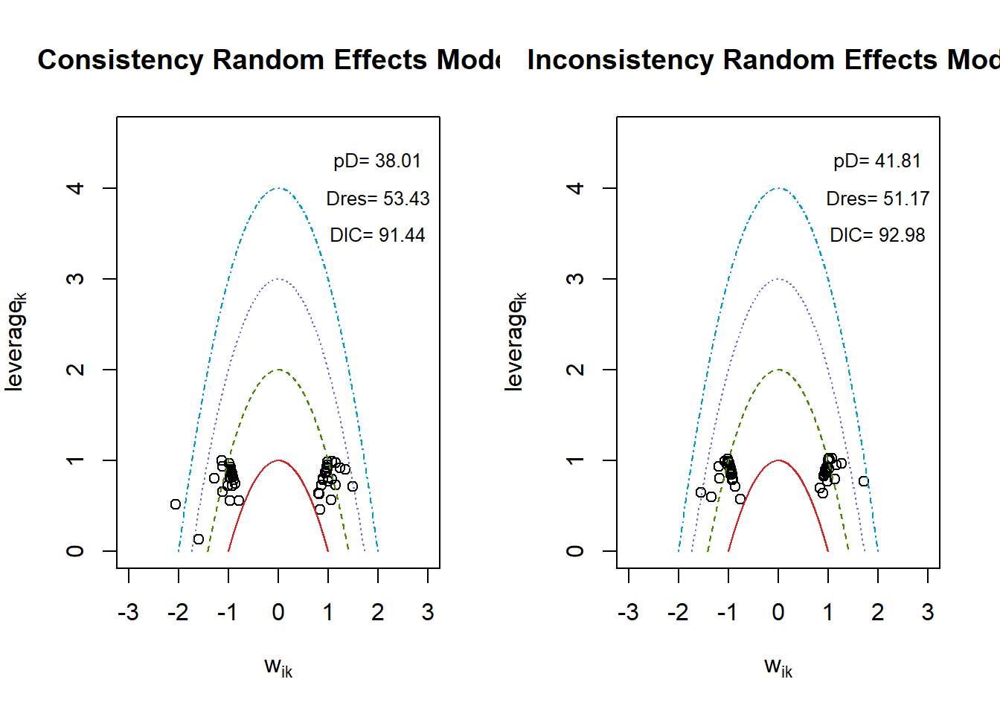
두 모형을 비교하면 consistency 모형의 DIC가 조금 더 낮게 나오지만 inconsistency 모형의 outlier가 leverage plot에 조금 더 가까이 나타나는 것으로 보인다. Dres는 inconsistency가 조금 더 낮게 나타나지만 모형의 복잡성(complexity)에 더 높은 비용을 지불하기 때문에 이러한 경우에 consistency 모형이 좀 더 적합한 것으로 간주된다.
par(mfrow=c(1,1))
BUGSnet::nma.compare(model_fit_ran, model_fit_ran_inconsis)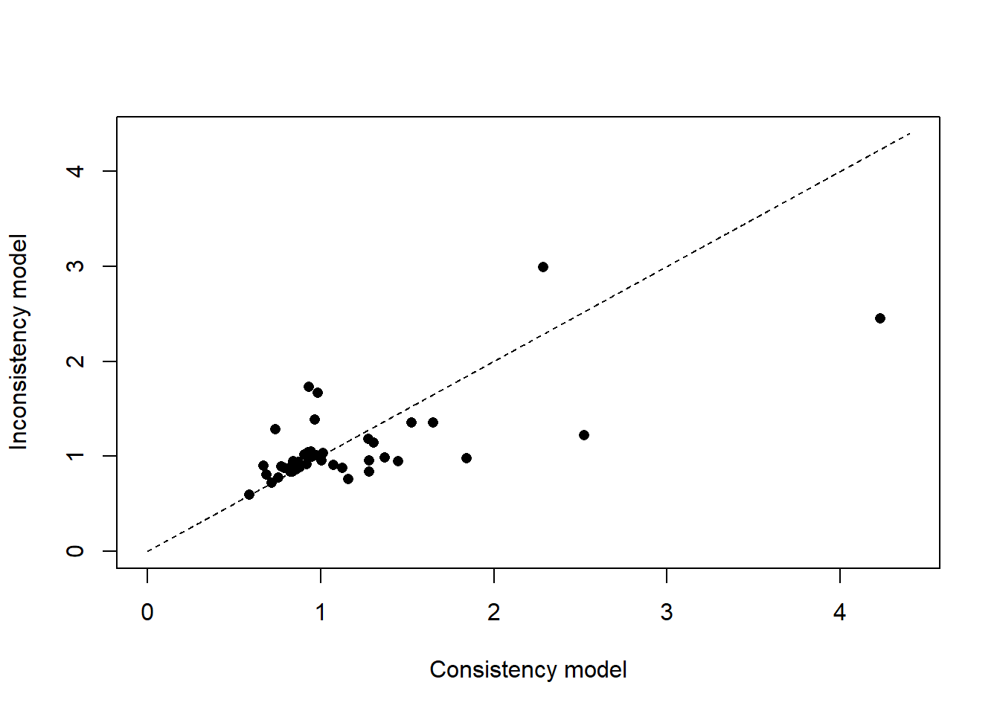
대부분의 점들이 라인 근처에 형성되어 있기때문에 두 모형은 비슷한 것으로 보인다. 이러한 경우에는 좀 더 일관성이 있는 모형을 선호한다.
7.5.6 Forest plot
Placebo를 기준으로 forest plot을 그려보면 다음과 같다. 이때 rma.forest 함수를 이용한다.
BUGSnet::nma.forest(mcmc_ran,
central.tdcy="median",
comparator="Placebo",
log.scale=FALSE)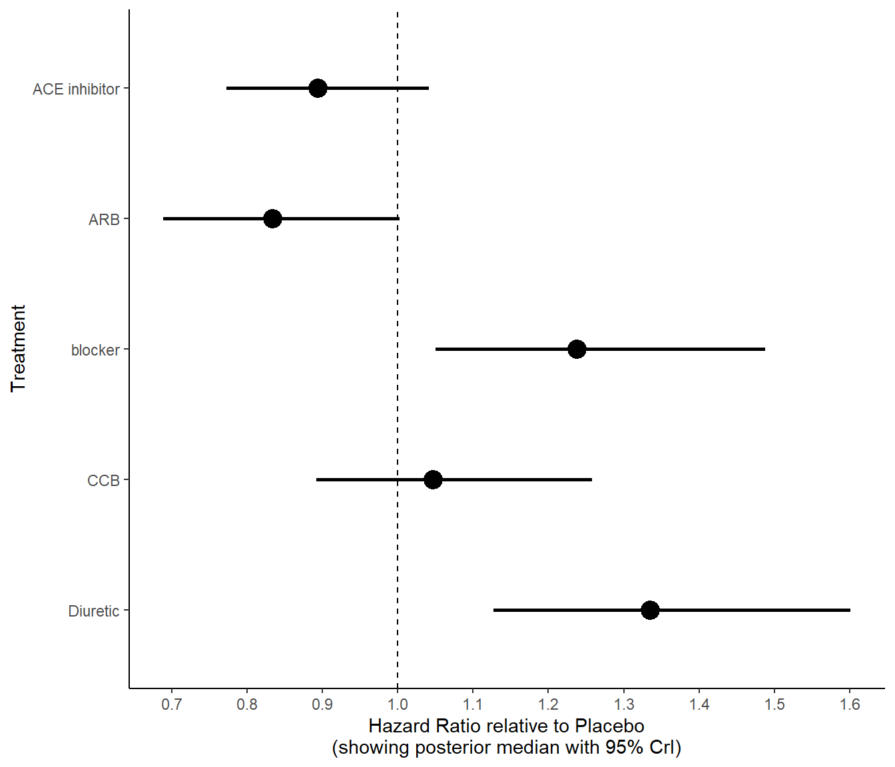
7.5.7 치료 간 비교우위 선정(treatment randing)
각 치료에 대한 순위는 SUCRA plot을 통해 살펴본다. SUCRA plot을 위한 기본 정보는 nma.rank 함수를 이용하고, 결과물중 우선 rankogram을 이용해 ranking probability를 살펴보자.
sucra.out <- BUGSnet::nma.rank(mcmc_ran, largerbetter=FALSE, sucra.palette="Set1")
sucra.out$rankogram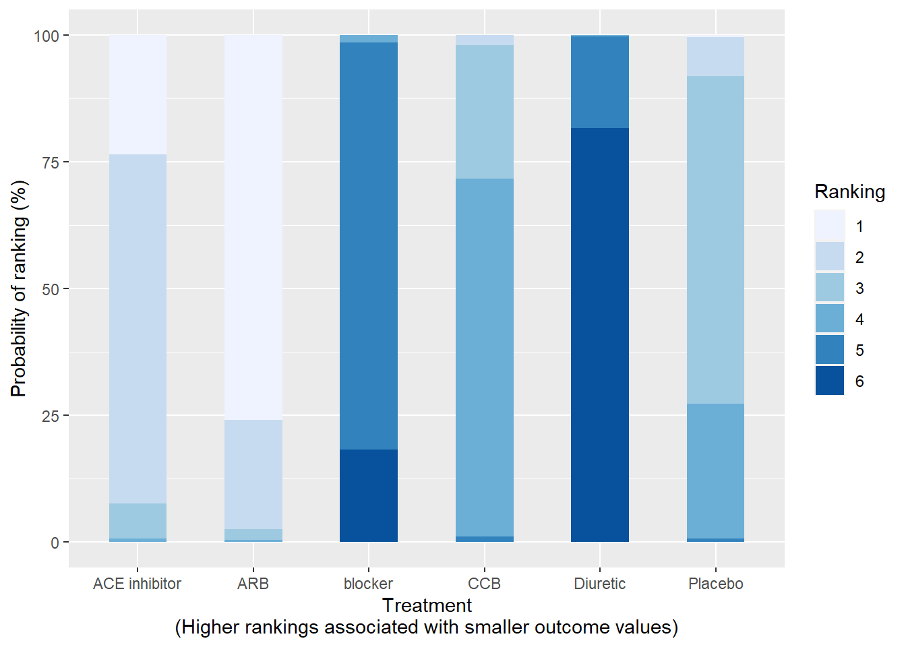
이를 수치적으로 표현하면 다음과 같다.
sucra.out$ranktable## # A tibble: 6 x 7
## # Groups: rank [6]
## rank `ACE inhibitor` ARB blocker CCB Diuretic Placebo
## <dbl> <dbl> <dbl> <dbl> <dbl> <dbl> <dbl>
## 1 1 22.2 77.2 0 0 0 0.62
## 2 2 70.3 19.8 0 1.85 0 8
## 3 3 6.9 2.72 0.12 26.5 0.03 63.7
## 4 4 0.62 0.2 1.1 70.6 0.38 27.0
## 5 5 0 0 80.1 0.95 18.4 0.58
## 6 6 0 0.03 18.6 0.05 81.2 0.03Survace under the cumulative ranking curve (SUCRA)는 결과물중 sucraplot에 담겨 있다.
sucra.out$sucraplot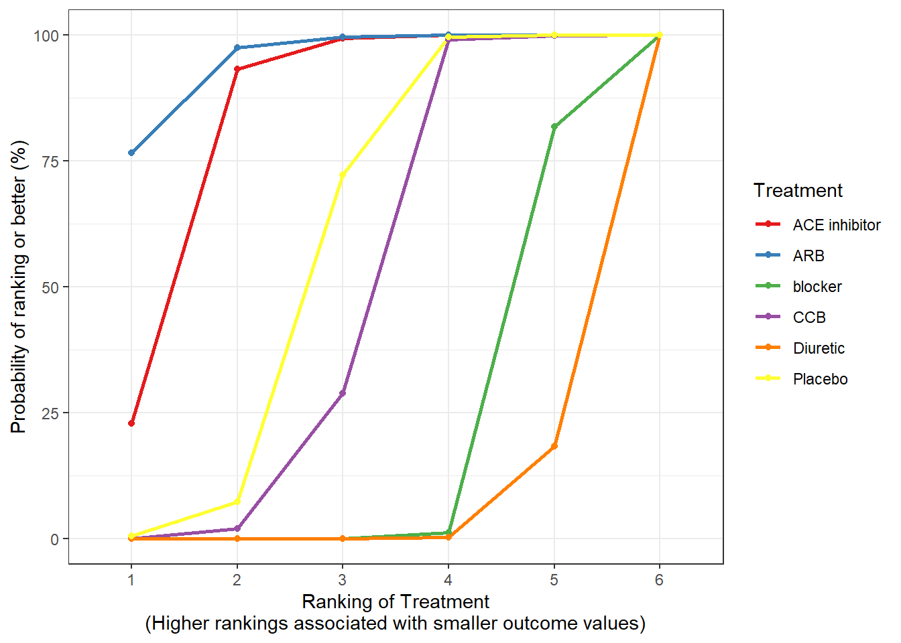
SUCRA plot의 수치적 정보는 다음과 같이 추출한다.
sucra.out$sucratable## # A tibble: 7 x 7
## rank `ACE inhibitor` ARB blocker CCB Diuretic Placebo
## <chr> <chr> <chr> <chr> <chr> <chr> <chr>
## 1 1 22.18 77.2 0 0 0 0.62
## 2 2 92.48 97.05 0 1.85 0 8.62
## 3 3 99.38 99.77 0.12 28.35 0.03 72.35
## 4 4 100 99.97 1.22 99 0.41 99.4
## 5 5 100 99.97 81.34 99.95 18.76 99.98
## 6 6 100 100 99.99 100 100.01 100.01
## 7 SUCRA 82.81 94.79 16.54 45.83 3.84 56.19네트워크 메타분석의 결과를 요약하는 또 다른 방법은 League table을 산출하는 것이다. League table은 모든 중재간의 상대 효과크기와 95% 신용구간을 포함한다.
league.out <- BUGSnet::nma.league(mcmc_ran,
central.tdcy="median",
order=sucra.out$order,
log.scale=FALSE,
low.colour="springgreen4",
mid.colour="white",
high.colour="red",
digits=2)
league.out$heatplot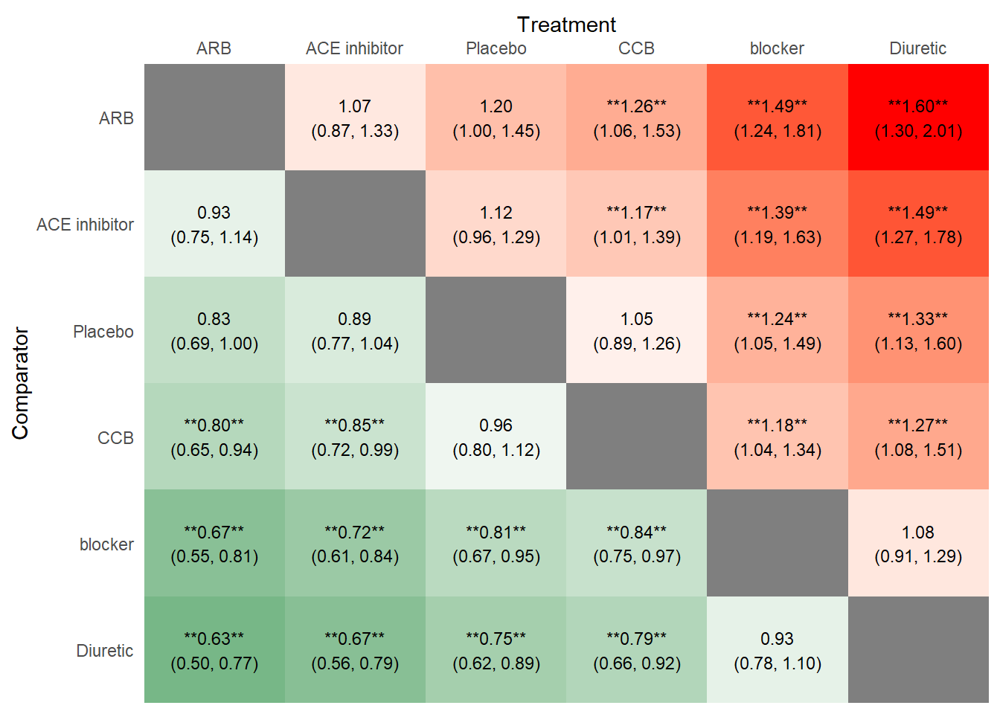
여기서 hazard ratio의 원 scale을 유지하기 위해 log.scale=FALSE 옵션을 사용한다. 녹색은 treatment가 더 좋은 효과를 의미하고 (추정값이 1보다 작은), 반대로 빨간색은 효과가 나쁨을 의미한다. **는 신용구간이 1을 포함하지 않음을 의미하기 때문에 통계적으로 유의한 차이를 의미한다. 이 결과를 테이블로 추출하면 다음과 같다.
league.out$table## ARB ACE inhibitor Placebo
## ARB "ARB" "1.07 (0.88 to 1.31)" "1.20 (0.99 to 1.44)"
## ACE inhibitor "0.93 (0.76 to 1.13)" "ACE inhibitor" "1.12 (0.97 to 1.29)"
## Placebo "0.83 (0.69 to 1.01)" "0.89 (0.78 to 1.04)" "Placebo"
## CCB "0.80 (0.65 to 0.94)" "0.85 (0.72 to 0.99)" "0.95 (0.80 to 1.11)"
## blocker "0.67 (0.55 to 0.81)" "0.72 (0.61 to 0.84)" "0.81 (0.67 to 0.95)"
## Diuretic "0.62 (0.50 to 0.77)" "0.67 (0.56 to 0.79)" "0.75 (0.62 to 0.89)"
## CCB blocker Diuretic
## ARB "1.26 (1.06 to 1.54)" "1.48 (1.23 to 1.82)" "1.60 (1.30 to 2.01)"
## ACE inhibitor "1.17 (1.01 to 1.38)" "1.38 (1.19 to 1.63)" "1.49 (1.26 to 1.77)"
## Placebo "1.05 (0.90 to 1.25)" "1.24 (1.05 to 1.49)" "1.33 (1.13 to 1.61)"
## CCB "CCB" "1.18 (1.04 to 1.34)" "1.27 (1.09 to 1.50)"
## blocker "0.85 (0.75 to 0.97)" "blocker" "1.08 (0.91 to 1.29)"
## Diuretic "0.79 (0.67 to 0.92)" "0.93 (0.78 to 1.10)" "Diuretic"